FARM introduction
FARM
(= Fault Reaction Management) is used for the inhibition
management of ECU functions. The functionality consists of a
corresponding functionality inside the ECU (FARM aggregate) and the
corresponding tool chain, where the FARM editor (FRED) is used to
modify the inhibitions.
The
main advantage from FARM is the possibility to modify the inhibitions
at
the post-build stage, i.e. to modify the inhibitions for an existing
ECU
without changing the program code, but just the FARM data section,
where the inhibitions are stored. In
addition the inhibition data are managed at a central place (FARM data
description file) for several documentation & post processing
use
cases.
Disclaimer
The disclaimer has to be accepted before working with the application.
Text of the disclaimer:
Warning! The application of this product can be dangerous. Please consider the following references and the instructions in the user manual.
With this Vitesco product it is
possible to affect
or control an electronic system in a motor vehicle. THIS PRODUCT
WAS DEVELOPED SPECIAL FOR THE USE BY QUALIFIED AND EXPERIENCED
TECHNICAL PERSONNEL.
Incorrect use or use by personnel without sufficient experience can change the vehicle behavior in such a way that damage on life and limb or property can happen.
Ø Do not use this product, if you do not have the necessary experience and training for this product.
Ø We recommend to use this product in the vehicle only on enclosed test tracks.
Ø You should use this Vitesco product on public roads only if the respective software, calibration and parameterization were tested before and by this fact it was stated that the software, parameterization or calibrations are safe.
Ø If you use this product in connection with systems in the vehicle, which have influence on the vehicle behavior and which must guarantee road safety of the vehicle, you have to ensure that the vehicle can be set into a safe condition in the case of a malfunctioning or a danger situation (e.g. Emergency stop or fail-safe operation mode).
Ø If you use this product, all valid regulations and laws must be considered regarding motor vehicles or operation of these.
If you do not consider these references, danger of damage for life and limb or property exists.
Data of any kind, which were determined by the use of the Vitesco product for purposes of the parameterization of electronic control units, must be examined for their plausibility before its use or passing on.
Vitesco does not take any liability for effects on or disturbance of Vitesco products regarding performance, usability and safety, due to use of software or model portions not delivered by Vitesco and/or due to access of these software or model portions via Interfaces release by Vitesco.
For damage by inappropriate operation or not intended use, Vitesco does not take any liability.
Vitesco offers trainings for the appropriate use of this product.
We would like to inform you about the fact that for product problems of greater importance Known Issue Reports are available. These inform you about technical effects and give references to existing solutions.
Vitesco will inform you on latest Known Issue Reports by Email (to all registered licensees). Before start-up of this product you must therefore examine whether for the available product version a Known Issue report is available and consider if necessary the information contained there.
If you cannot agree to the restrictions specified above, please send this product back within one (1) month to us at our expense. We will thereupon return the purchase price immediately to you.
Overview
- FARM =
Fault Reaction Management, also known as FIM (Failure Inhibition
Management) within Autosar
- FARM provides the functionality to inhibit ECU functions by diagnostic inputs from the error management or by auxiliary inputs. Diagnostic inputs can be grouped to summary objects for efficiency reasons. Auxiliary inputs are used to trigger a specific functional behavior based on an ECU information, which is not represented by a symptom.
- Main use case: Prohibit wrong fault reaction in case of errors impacting several ECU functions.
- The FARM tooling supports the creation and modification of the function inhibition matrix. Modification of an already pre-configured inhibition matrix is even possible without changing program code.

Main changes within v2.3.0
The complete list of changes is documented within the release note.- Command-Line tool to import/export exchange-files and .dcm.
- Support DCM, CDFX & S19 file generation from FRED Headless Mode.
Main changes within v2.2.0
The complete list of changes is documented within the release note.- Migrate Jakarta JAXB.
- FRED utility : Export updated FARM-Symptom2Symptom.
- Matrix to Excel.
- Support Resolve Summary Links with new FRED File.
- Diff Panel : Support Import selected Items for SAXs.
- Update E4 related changes in FRED Eclipse RCP Version
- Update Row & Column Headers in the PDF Export
- Export data to s19
Main changes within v2.1.0
The complete list of changes is documented within the release note.
- FID/AUX Update : Show Notification Message when it is modified.
- Sorting of columns in the view for MIL hiding
- DEM Event text Filter in the AUX Event Panel
- Diff Panel : Import Selected Items
- Change the state of Resolve summary links when opening the new FARM file
- Add Cancel Button in the Merge Window
- Update OBD Information and Column & Row Headers in PDF Export
- Excel Alignment : Excel export view and FIM documentation
Main changes within v2.0.0
The complete list of changes is documented within the release note.- BSW: Introduce "Vitesco Technology" into BSW platform
- FRED : Update Java , Vitessar , ARModelUtil and dependent libraries
Main changes within v1.17.0
 The
complete list of changes is
documented within the release note.
The
complete list of changes is
documented within the release note.MIL Hiding :
- The Tool shall support
the Separation of Calculation and Display content in the FARM Editor
- Check
whether all the links are OBD inhibited or not
- Check
whether all the Input and Output Events are OBD relevant or not
- FRED:
Add a new filter for MIL Hiding
- FRED:
Add a new filter for FID Inhibits OBD
- MIL
Hiding : Resolve Summary links and calculate based on summary-fid links
Export :
- FRED:
Excel export does not work for some cases with 2 farm files
- FRED
Converter: S19 file should be appended for FRED files for Exporting
Farm Data
- FRED:
Export Farm Exchange file for FRED file does not work as expected
- FRED:
All the default export location should be the location of the farm/Fred
file
- Add
"Fid Role" Column in create FIM documentation(Fid Map Sheet)
excel export
- Add
the calibration file name into the Excel Export & Fim Documentation
- Export
spreadsheet for view : Change Save location for pdf export is the
same as opened FARM-file location.
Merge :
- Merge
the Auxiliary Events with OBD information from One Farm/Fred file to
another file
- Merge-Option
to select to merge "description" and clean-option for
"description"
User Interface :
- FRED: Add a new filter for "Fids per Input".
- Add a new filter for Auxiliary OBD Information
- Delete 'FID inhibits Emission strategy ' in all the
available Fids
- Delete OBD information in all the Auxiliary Events
- FRED: The search dialog should always be in front for
CTRL+F command
- FRED: Sorting for
referenced DEM Events for Auxiliary Event
- FRED: Increase the row width for the input events
column
- Adaptation of column width for view inhibition, summary
links and summary aux links
- FRED: Keep similar max row width for all the views
General
:
- Added
“AGGR� value in InputOutput Object Mouse Over
- Update
FARM data model schema dialog which contains all version information.
- Update
"resolve summary links" state when loading the new fred/farm
file
- FRED:
The button state must be updated once the valid file is converted to draft
state
- FRED:
Hide Aggregate and spec nodes if there are no input output events for the
primary tree panel
- FARM: Update maturity to 0 if the C_ABC_INI_TYP:XX, Bit 7=1 is set
Main changes within v1.16.0
The complete list of changes is documented within the release note.- Fred - Compatible with Java 1.8 Version
Main changes within v1.15.0
The complete list of changes is documented within the release note.- Set All AUX OBD field to "0"
- Update the Fim Documentation with the symbolic names for FId's instead of software names
- Fid's with no responsibility data should aslo be present in the Export To Excels
- Possible to export a mini farm file for fids and their links for one selected FARM/FRED file only.
- Allow copying mask for the OEM mode
Main changes within v1.15.1 compared to v1.15.0
The complete list of changes is documented within the release note.
- Bug fix for the merging of roles in cmd mode
- Bug fix for the merging of roles with older version of farm files
Main changes within v1.15.0 compared to v1.14.0
The complete list of changes is documented within the release note.
- Set All AUX OBD field to "0"
- Update the Fim Documentation with the symbolic names for FId's instead of software names
- Fid's with no responsibility data should aslo be present in the Export To Excels
- Possible to export a mini farm file for fids and their links for one selected FARM/FRED file only.
- Allow copying mask for the OEM mode
- Some bug FIxes
Main changes within v1.14.0 compared to v1.13.0
The complete list of changes is documented within the release note.
- Introduce a FARM Database
- Create an interface to read different OBD Variants
- Improvement in FRED diff function
- Allow to open prebuild files in the OEM mode
- Update Tool tracking database
- New option to Merge all roles
- Some bug FIxes
Main changes within v1.13.0 compared to v1.12.1
The complete list of changes is documented within the release note.- Create a new Fim documentation.
- Import Farm configuration from caliberation data is enabled for OEM mode as well.
- Improvement in FRED diff function
- some bug fixes
Main changes within v1.12.1 compared to v1.12.0
The complete list of changes is documented within the release note.
- Some Bug fixes.
- Improvement in Schema Change Dialog.
Main changes within v1.12.0 compared to v1.11.0
The complete list of changes is documented within the release note.- Fred Shall be usable as execution platform for the EMS3Generator
- Abstraction to read different OBD calibration data variants
- Masks of DemEvent and AUX can share the same acronym
- Save the Farm file in the same schema version as the original opened
- The maturity is ignored if the OBD expert flag is set
- Summary-Auxiiliary and Fid/Err relations table sheets shall be read only for non OBD experts
- Export a FARM file in a older schema format
- SaveAs: Make it possible to save a loaded fred-file as farm-file
- Show the schema version in the project info panel
- Exclude child link count for complex link for binary compare
- The tooltip for input events shows only the first and the second file but the 3rd or any other one.
- Lots of improvement in FRED eclipse verision
- some bug fixes
Main changes within v1.11.0 compared to v1.10
The complete list of changes is documented within the release note.
- Introduction of a new possibility to classify FID's(Role)
- Introduction of a new maturity 0 for unused FID's
- Added the amount of all resolved SAX links to the total number of Inh links.
- Support for Fim WIthout FRED
- Support for viewing 16 bit mask in the bit mask panel
- Number of Inputs allowed per FID is unlimited now (it was 125 earlier)
- Display a message box for the shema change with Farm file loading
- Added new condition to compare/diff farm files with bit mask acronym and not with the bit mask definition.
- Correction done in display of U codes.
- Disable clean/merge for valid farm files
- Enable XXXXXXXX links for editing in OEM mode.
Main changes within v1.10.0 compared to v1.9
The complete list of changes is documented within the release note.
- Display of FARM data imported via a S19 file was not Ok and it is fixed.
- Feed to Others will not ignore the "Add to table view" mode
- Added number of SAX to FARM statistics
- Fred file was corrupted after save and it is fixed
- Merge functionality will work well with compare mode (Binary)
- Global compare functionality "DIFF" is improved.
- "CTRL+A" will work in the table sheet even if there is no row/column
- Export spreadsheet for view/print ---> Adjust Excel File view according to FRED view
- Filtering for OBD conflicts based on error class ---> Highlight/mark conflics
Main changes within v1.9 compared to v1.8
The complete list of changes is documented within the release note.
- Define interface to plug-in different code generators(generator update needed for multicore)
- Maturity and Responsible is considered in Diff function
- A new file format(.fred) shall be supported including the generator and the AR configuration
- FARM statistics export shall provide another sheet for aggregates
- Performance improvement while changing FARM data
- Option to select Excel 2003 format in User settings
- Some minor bug fixes
Main changes within v1.8 compared to v1.7.4
The complete list of changes is documented within the release note.
- Filter introduced in FID/ERR relation table sheet for INH and VAL
- Freeze pane in export to excel for column and row headers.
- Default values put for Input per FID content filter
- Rule 600 is improved
- Overall speed of the Farm checker has been improved
- Some minor bug fixes
Main changes within v1.7 compared to v1.6.1
The complete list of changes is documented within the release note.
- FARM models are created using JAXB instead of XMLBeans
- Porting the application framework from Swing to Eclipse RCP.
- Improved performance.
- Introduced a new matrix to support a mapping between signals and auxiliaries.
- Introduced a new API to process SummaryAuxiliaryEvents/Configurations.
- Some minor bug fixes
Main changes within v1.6.1 compared to v1.6
The complete list of changes is documented within the release note.
Below bug orrection is done:
- Correct Edit Persons functionality on selecting the person.
- Loading large FARM files several times may lead to memory problems
Main changes within v1.6 compared to v1.5
The complete list of changes is documented within the release note.
- Logic compare feature extended in order to
ignore
generated links, but analyze only the link logic.
If e.g. a complex FID depends on the number of cylinders and the related inhibition link logic for this FID is identical e.g. for a 4- and 6 cyl- application, the logic compare between those two applications would show no difference. Only the binary compare would show differences for cyl 5 and 6, as the binary compare ignores any link logic, but only compares the links existing in the ECU either created manually or created by a link logic for complex FARM objects.. - In case a link logic and manual links are applied to a complex FID/ERR/AUX/SUM, two inhibition link icons will show up in the matrix view for the complex FARM element, one for the link logic and one for manual links.
- Modify OBD conflict filter: When the OBD conflict filter is active, also OBD relevant FIDs shall be filtered, which are exclusively inhibited by ERR's which are not OBD relevant.
- Two new pages (statistical data) added in the project Info section of the tree component view
- Generation of an Excel diagram for FID maturity and sorted by responsible.
- Introduction of a new content filter option for FIDs having a user defined range for 'Inputs per FID' for the Inhibition link view.
- Creation of the Symptom
to Symptom inhibition matrix as Excel report.
Main changes within v1.5 compared to v1.4
The complete list of changes is documented within the release note.
- Excel-export includes 'x' to show rows/columns that do not exist like it is done within the FRED matrix view.
- Excel-export now will have relevant column headers.
- XXXX mask (hard coded SW inhibition) & FID-ERRrelation are not editable in the OEM edition.
- Disable
recording of information log items, as a huge number of information log
items decreases the performance of the editor. Warnings and errors are
still recorded
- Enable possibility to feed objects from one matrix view to the others. One use case is to easily fill the Summary link view based on SUM objects within the inhibition link view.
- New matrix navigation for the FRED matrix views (bird eyes view).
- Synchronize matrix tabs on demand, i.e. synchronize e.g. tree->matrix drag and drop functionalty for Inhibition link matrix & FID-ERR relation matrix & Summary link matrix.
- Identify &
remove
multiple specification reference entries for ERR's in the hierarchy.
In addition several minor changes and bug corrections were done.
Main changes within v1.4 compared to v1.3
The complete list of changes is documented within the release note.
- Extended merge functionality. A dedicated merge panel is introduced to control all merge related options.
- 3rd merge stratergy is introduced, which is similar to the 2nd one, but keeps link cells within the target, that are not present within the source. (keep/delete & add )
- Updated spreadsheet merge functionality (either via spreadsheet merge panel or vial column/row selection) based on general merge settings and visible links having full control on the result.
- Tree based merge from 2nd to 1st FARM file
based on the merge settings having full control on the result.
- Mandatory description field for lnhibition links based on a selection list. An optional part is still existing for free text editing.
- Management of persons is enhanced: Delete & replace functionality added.
- Save stage: Option to delete log Items ( info & warning ) and to delete change history.
- Enhanced drag&drop option from tree to table view for 2 FARM files in order to fill the matrix view only with objects, that are common in both FARM files ( synchronous - common ).
- Tree and/or table content filter is enhanced with following options
- Self Inhibitions (table content filter)
- Real OBD conflicts (table content filter, precondition: calibration file with OBD info loaded))
- Mandatory description (table content filter)
- Empty responsibility (tree and table content filter)
- Show empty specification and aggregate nodes, as the FARM files will contain all specifications/aggregates (tree content filter)
- .Partial farm file export is working on the filtered view
- Add/Edit/Delete prohibited for FID related links with maturity level 5 ( completed), 4 (Checked)
- User preference settings are introduced in order to customize mainly the behavior of tool tips and message boxes.
In addition several minor changes, GUI optimizations and bug corrections were done.
Main changes within v1.3 compared to v1.2
- Possibility to start FRED with parameters (file, FARM objects to be displayed)
- Merge of maturity from 2nd to 1st FARM file
- Wrong behavior at sync. drag&drop and active tree filter
- Introduce 2nd level sorting strategy (by name) for sorting of columns/rows within table view
- Extended compare report / visualization
- Suppress default preview generation for pdf/excel export
- Introduce FID categorization for 'validation FID' within ERR-FID relationship matrix
- Export partial farm file according to the spreadhseet view setting
- Provide only one recent file list for 1st and 2nd FARM files
- Cosolidate merge behavior for muli selection of objects in 2nd .farm file
- Introduce second merge strategy - Delete&add
- Excel export for spreadsheet view
- Summary link resolver shall import all missing ERR's necessary to show the complete links
- Introduce ERR-FID relationship matrix within OEM mode / OEM viewer mode
- Consolidate root node behavior for merge from 2nd to 1st .farm, if 2nd tree filter is active
- Performance improvements (startup / multi select drag&drop)
- Merge/copy responsible persons for FID's
Main changes within v1.2 compared to v1.1
- Introduce refresh functionality for the spreadsheet view
- Introduce store / restore functionality for the spreadsheet view inside a FARM session
- Restore view from last session when loading the same FARM file within a new FARM session
- Change behavior for save as panel, no push of the 'Enter' button necessary to accept file name
- Alphabetical sorting of the tree view items (folders and FARM objects)
- Pressing ENTER within an empty spreadsheet link cell will open the link editor
- Check FARM file integrity (checker rules) when saving as 'valid'
- Introduce context sensitive help link within filter dialogs (tree and table filter)
- Improve visualization and icon design for manual resorting of rows/columns
- Remove name constraint for file save as to LIMAS (no fixed baseline as part of the name)
- Tooltip for ERR-AUX-FID within inhibition or summary matrix / Show number of related links
- Possibility to generate a report for the cheker results
- Change visualization of resolved SUM links - Show all resolved links, also identical links
- Difference report: Differences shall be displayed in the opposite way.
- Introduction of special display/documentation mode for XXXXXXXX masks (don't care masks).
- Invalid FARM file is created when using FID-ERR relation matrix (Rule based link generation, complex links)
- Crash in OEM version when user credentials are not complete
- Exception thrown when last row in table view shall be removed from view
- Import HEX with explicit FARM file (v1.0 schema) reference throws an invisible exception
- Merge problem from 2nd to 1st data source in case of equal mask acronym but different type
In addition several minor changes and bug corrections were done.
Known issues
Screen shots within the help file:
All screen shots, where the changed layout is necessary to demonstrate a corresponding behavior, were updated.
Spreadsheet export, pdf-generation:
It is strongly recommended to store the changes of the FARM file before doing the corresponding actions.
Glossary
|
Acronym |
Meaning |
Comment |
|
FARM |
Fault Reaction Management |
Vitesco Powertrain naming. From a functionality point of view FARM = FIM |
|
FIM |
Function Inhibition Manager |
Autosar naming |
|
CVM |
Configuration Value Management |
LIMAS add on tool |
| Vitesco | Vitesco Technologies | |
|
ADD |
Automotive Data Dictionary |
ECU data management tool |
|
LIMAS |
Vitesco Powertrain internal system for the management of specifications |
|
|
FRED |
FARM-Editor |
Main part of the FARM tool chain for modification of inhibition links |
|
FRAX |
FARM Data extract |
FARM data are extracted from LIMAS, ADD, CVM |
|
FROP |
FARM Compiler |
Part of the FARM tool chain which is running in the ECU SW build process. |
|
Summary link |
Dependency link between a summary object (output) and a symptom object (input) or several ones. |
|
|
Inhibition links |
Dependency link between a Function identifier (output) and an input object, i.e. either a diagnostic, an auxiliary or a summary object. |
|
| ERRM | Error Management | |
|
FID |
Prefix for all function identifier |
|
|
ERR |
Prefix for all error management objects (symptoms) |
|
|
AUX |
Prefix for all auxiliary objects |
|
|
SUM |
Prefix for all summary objects |
|
Overall FARM workflow
The FARM tool chain supports the management of FARM data from the creation till the generation of an executable for the ECU. The basic workflow is divided into 4 phases:
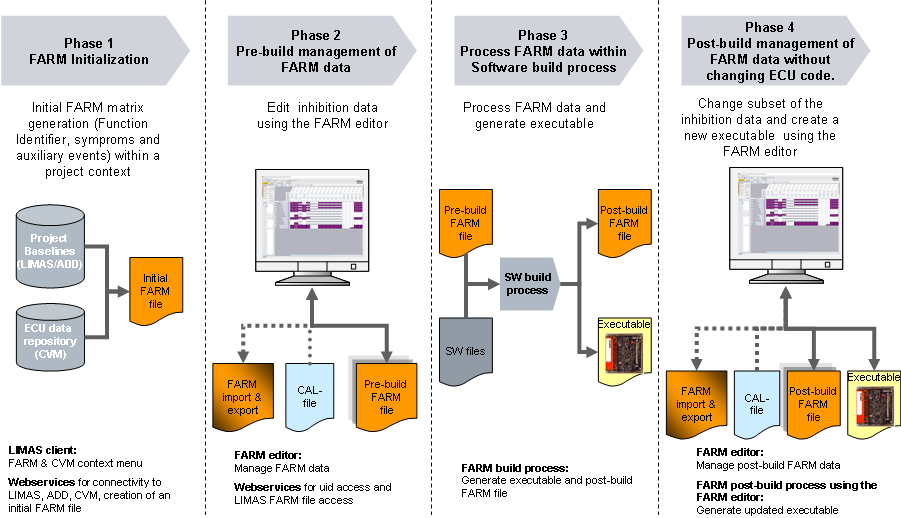
Within this manual the tool features for phase 2 and 4 are presented.
Basics
Summary:
The FARM data are represented within a FARM XML file following a defined structure (XML schema). According to that schema all FARM data are stored inside the xml file at dedicated <tags>.
The corresponding XML schema is available on demand at Vitesco.
The FARM file is checksum secured in order to prohibit a modification with a not authorized tool chain. If a not authorized change of the FARM file is done with a general purpose editor, the file will become invalid.
FARM objects
Function identifier FID:
Naming
convention used for the definition at specification level:
Fixed prefix for any FID: NC_FID_
Example name:
NC_FID_xyz
Display name inside the FRED:
FID_xyz
Symptom objects (ERR) from
Error Manager
(ERRM6.x)
Naming convention used for the definition at
specification level:
Fixed prefix for ERRM6 symptoms: NC_IDX_ERR_
Example name:
NC_IDX_ERR_xyz
Display names inside FRED:
ERR_xyz
Auxiliary objects (AUX)
Naming
convention used for the definition at specification level:
Fixed prefix: NC_IDX_FID_
Example name:
NC_IDX_FID_xyz
Display names inside FRED:
AUX_xyz
Summary objects (SUM)
Summary
objects are only defined within the FARM editor, they can be used to
group symptoms in order to have a more efficient
inhibition mechanism.
Display names inside FRED:
SUM_xyz
FARM object types
Simple object: Scalar
Any scalar
object like FID_xyz, ERR_xyz, AUX_xyz, SUM_xyz.
Complex object:
Array
Any object, which is defined as 1...3-dimensional array. Due to
Matlab-Simulink constraints only 2 dimensions shall be used.
Complex objects are defined at specification level have a base-name
and dimensions.
Inside the FARM tool chain the array definitions are represented by
the array definition name, i.e.
base-name[dimension-1][dimension-2], e.g.
FID_xyz[NC_CYL_NR][NC_SENS_KNK]
The display name inside the editor is defined as base-name and a
symbolic representation of the dimensions in order reduce the
display name length. The symbolic representation of dimensions
is:[...]
Example: FID_1[NC_CYL_NR][NC_SENS_KNK] would be represented as
FID_1[...][...]
Simple object: Array element
Any
array element like FID_xyz[0]. Array elements are scalar objects,
but assigned to a complex array definition object.
Summary of the display names within FRED and the related names at specification level:
|
Specification name (specification) |
Display name inside the editor |
|
NC_FID* |
FID_* |
|
NC_IDX_ERR* (ERRM6.x) |
ERR_* |
|
NC_IDX_DIAG* (ERRM4.x) |
ERR_* |
|
NC_IDX_FID* |
AUX_* |
|
<FARM-object>[index] |
<FARM-object>[...] |
FARM links
Summary links:
Summary links are
used to assign diagnostic objects to summary objects. In order to
establish a summary link, you need the input (ERR_xyz) and the
output (SUM_abc).
Within FRED an own GUI tab is introduced in order to manage the summary links.
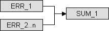
Summary Auxiliary links:
Summary auxiliary links are
used to assign auxiliary objects to summary auxiliary objects. In order to
establish a summary auxilairy link, you need the input (AUX_xyz) and the
output (SUM_AUX_abc).
Within FRED an own GUI tab is introduced in order to manage the summary auxilairy links.
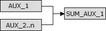
Inhibition links
Inhibition links
are used to inhibit functions (FID) by either diagnostic
objects (ERR) or auxiliary objects (AUX) or summary objects (SUM).For
the establishment of inhibition links masks are needed, which use
the mask specific bit information from the inputs.
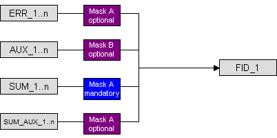
Properties of FARM links
Category
Optional – This
link category is
possible at pre-build and post build stage. Any link of this category
can be changed at pre - and post build stage.
Mandatory
– This link category is
only possible at pre-build stage. A mandatory link cannot be changed
any more at
post build stage.
Type
Simple link: Link between simple
objects
Example:
ERR_1-> MASK -> FID_1
Complex link incl. link logic: Link, where at least one
complex
object is used either for input or output. For complex links
a
dedicated link logic is necessary, which has to be specified inside
the FARM editor.
Example: ERR_1[NC_CYL_NR] -> MASK + Link-Logic ->
FID_1[NC_CYL_NR]
Time stamp for last change (done automatically)
Reference to a person for the last change (done automatically with the login user except for dedicated merge operations)
Relation between functions (FID's) and symptoms(ERR's)
In order to document an inhibition matrix for the legislative authority, e.g. CARB, the following information is necessary for each OBD relevant symptom:
Functionality abc, which is responsible for the diagnostics of an OBD relevant symptom abc, is inhibited by a set of other symptoms.
In order to retrieve this information, which is hard coded inside Software, the relation between a diagnostic functionality of a symptom (ERR) and the corresponding controlling FID has to be documented. Therefore the relationship matrix is introduced in FRED.
If a relation between a symptom (ERR) and a Function Identifier (FID) is set, it means, that the diagnostic functionality of the symptom is controlled by the corresponding FID. The naming convention for a FID, which controls the diagnostic functionality of the corresponding symptom ERR_xyz is defined by naming convention: FID_ERR_xyz.
FID's used for inhibition
If a FID_ERR_xyz belonging to the symptom ERR_xyz is active for inhibition (INH), the corresponding diagnostic function and the related symptom will be 'inhibited'.
Example, where either one symptom (ERR_1) is represented by one function (FID_ERR_1) or several symptoms (ERR_2_a, ERR_2_b) are represented by one function (FID_ERR_2).
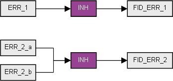
FID's used for 'Validation'
If a FID_ERR_xyz belonging to the symptom ERR_xyz is active for validation (VAL), the diagnostic result (e.g. error active) will not be passed to the error management.A typical use case would be to synchronize 'master-slave' diagnostic functions, where e.g. a catalyst diagnosis would report the diagnostic result not before the O2 sensor diagnosis has reported the corresponding result.
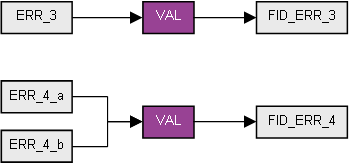
Pre-build and post build phase:
During the pre-build phase all FARM data and FARM settings can be changed. Once the pre-build FARM file is processed during the Software build process, parts of the FARM data / settings will be fixed and cannot be changed anymore at the post-build phase.
At the post-build phase only limited actions are possible:
- Add summary objects
- Add optional inhibition links
- Add optional summary links
- Add persons
- Add roles
- Delete summary objects, if they do not contain mandatory summary links
- Delete optional inhibition links
- Delete optional summary links
- Modify summary objects (e.g. description), but not the name
- Modify optional summary links
- Modify optional inhibition links
- Modify the FID-ERR relationship matrix for documentation purpose
Main functionality of FRED (tree & spreadsheet view)
Summary:
In order to manage the FARM inhibition links/summary links/summary auxiliary links the editor provides 3 main tabs, which can be selected by the end user:
- Inhibition link view used for the management of inhibitions links.
- Summary link view used for the management of summary links.
- Summary Auxiliary link view used for mangement of summary auxiliary links
Inside each main view there is a
- Tree component (Project info & tree view) for all FARM objects within the specification context (primary and secondary tree)
- Table component for links between input and outputs as spreadsheet view.
In addition to the inhibition,summary and summary auxilairy links the relation between ERRM objects and FID's can be documented via a fourth tab (FID/ERR relation).
Log items are shown in a separate component at the bottom of the FRED window. Log items can be displayed for the primary and secondary FARM file via tab selection. Log items are shown in a standard spreadsheet view, that can also be exported to e.g. EXCEL.
Start FRED
The application is a single launch application and cannot be started multiple times. If you want to do so, you will get a corresponding error.By default, FRED is installed at Vitesco within C:\Win16App\Farm_Tools.
It is recommended to use fred.exe to start FRED, but due to compatibility reasons there is also a batch to start FRED (Farm_Editor.bat). Once FRED is installed, the file extension .farm can be assigned to the program fred.exe. As result, FRED will open with the the corresponding file when double clicking on a corresponding .farm file within the e.g. Windows Explorer.
At the start the disclaimer will pop up to be either accepted (FRED will continue) or rejected (FRED will be canceled). The starting time of the editor depends on the computer performance and is normally <10s. Within the Vitesco environment the user details are retrieved by a WebService.
The disclaimer is user configurable. After the first time launch of the FRED, the user can switch off the disclaimer by selecting the appropriate preference settings
Main graphical user interface (GUI)
FRED is a JAVA application with a state of the art user interface based on SWING.The GUI components of the type 'tree component' and 'log items' can be easily hidden/shown by a mouse click on the corresponding component tab
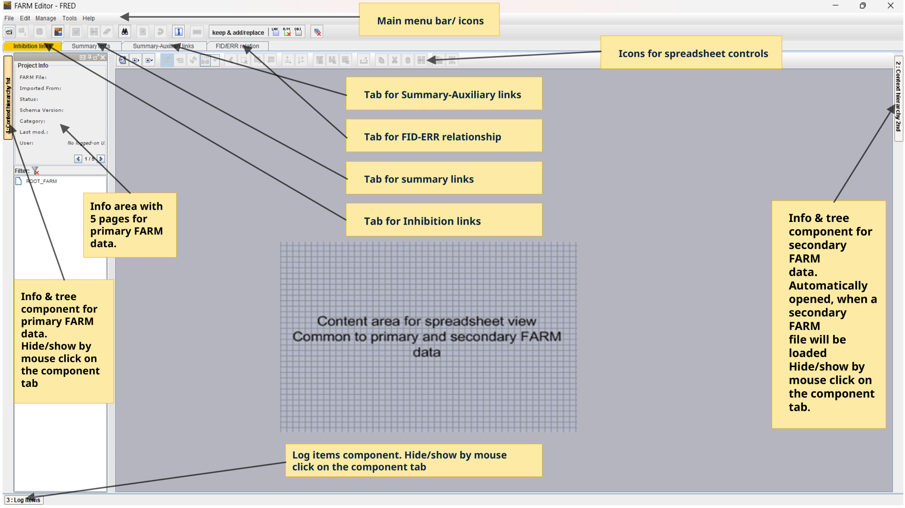
Functionality provided by the FRED main menu bar:
 Load FARM
file from file system
Load FARM
file from file system
Load 2nd FARM file from file system
Save FARM file to file system
Generate a Word document containing all links (inhibition links and summary links. Details see WordGeneration.
Merge data from 2nd to 1st FARM file based on a user selection (specific panel). Details see GeneralMerge.
Clean FARM data inside primary FARM file based on a user selection (specific panel). Details see Clean1stFARMdata.
Search for FARM objects in the tree-, spreadsheet-, and log items component. Details see Search.
Create a simple difference report (HTML) for 2 loaded FARM files. Details see DiffReport.
Undo of modifications of the FARM data. Details see Undo.
 Merge
settings icon and display, where all merge options can be controlled.
Merge
settings icon and display, where all merge options can be controlled.The merge strategy is displayed explicitely, LNK (link settings), R/M(Responsibility/Maturity) and OBJ(Object setting) are indicating, whether those options are active in general.
For the shown screenshot the R/M settings are inactive. When clicking on the button, all details will be shown. Mouse over will activate a tooltip, which shows the current active settings.
Inactive / active synchronization of matrix views (Inhibition links, Summary links, FID/ERR relation)
Global merge settings including the strategy definition for all merge and copy&paste related operations
Summary: All the merge settings including the merge strategy has been located in the merge settings panel. The panel can be accessed by clicking the right most toolbar button in the main window.. The toolbar has information on the current merge stratergy in addition to the merge settings as selected in the merge settings panel.
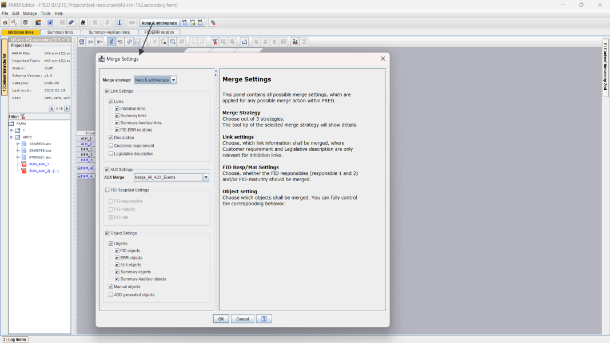
Merge strategy:
- Strategy
1, as implemented within all FRED versions till v1.2:
keep&add/replace
Consequence: Keep existing target cell content, if no identical source cell content exist, replace identical cell content (source=target) and add new cell content.
- Strategy
2,
which is newly implemented within FRED
v1.3:
delete&add
Consequence: Delete all target cell content before adding the source cell content. As a result the target and source cell content are completely identical. - Strategy
3,
which is newly implemented within FRED
v1.4:
Keep/delete&add
Consequence: Delete only those target cells, where the source has a link content, other target link cells are unchanged. As a result the target is identical to the source for all source link cells, but might have additional links cells which are not present in the source.
Explanation: Cell content = Either links within the Inhibition links, Summary links or FID/ERR relation or FID-responsible-1, FID-responsible-2 or FID-maturity.
The user selection for the merge strategy will be remembered by the application for the next session. The following table specifies the behavior for e.g. links depending on the different combinations of source and target link.
Source link: Link, which is copied
Target link: Link, which is merged/pasted
| Source link | Target link before merge/copy | Target
link after merge/copy Strategy 1: keep&add/replace |
Target
link after merge/copy Strategy 2: delete&add |
Target
link after merge/copy Strategy 3: Keep/delete&add |
| No link existing | Link existing | unchanged | Target link will be deleted. No link after merge/copy. | unchanged |
| Link
existing |
Existing link, which is identical to source link (e.g. identical input/output, identical bit mask) | Target link will be replaced by source link, no impact on link, as they are identical, but impact on descriptive parts | Target
link will be deleted and source link will be added. Same result as for
strategy 'Keep&add/replace"' |
Target link will be deleted and source link will be added. Same result as for strategy 'Keep&add/replace"' |
| Link existing | Existing
link, but not identical to source link.(e.g. other bit mask) |
Source
link will be added in addition to the already existing one |
Target
link will be deleted and source link will be added. |
Target link will be deleted and source link will be added. |
| No
link existing |
No
link existing |
No
link existing |
No
link existing |
No link existing |
Link Settings:
Choose, which links shall be merged:- Inhibition links
- Summary links
- FID-ERR relations
- Summary-Auxilliary
Links
For the inhibition links the option can be choosen, whether the legislative description and/or the customer requirement shall be merged or not.
FID Resp/Mat Settings:
Choose, whether FID responsibility (both responsible 1&2) and/or the FID maturity and/or FID role shall be merged.- FID responsibility
- FID maturity
- FID role
Object settings:
Choose, whether objects shall be merged.The merge of objects could be activated in combination with the merge of links in order to merge all missing input or output link objects from the 2nd FARM file to the 1st FARM file.
Example: If a FID-1 is linked to ERR-1 and ERR-2, where ERR-2 is not existing in the 1st FARM file, the object ERR-2 will be merged to the 1st FARM file, if the user wants to merge the FID-1 links.
Options for the object type:
- FID objects (only possible for prebuild FARM files)
- ERR objects (only possible for prebuild FARM files)
- AUX objects (only possible for prebuild FARM files)
- Summary objects
- Summary-Auxilliary
objects
Besides the object type the category can be chosen:
- Manual objects (Summary objects are by default manual objects, as they are created within FRED, but also FID's,ERR's,AUX's could be of the typ manual, if added manually using FRED)
- ADD generated objects (only possible for prebuild FARM files)
A multi selection is possible.For post build files, a reduced set of merge operations is offered.
With the above set of combinations user can define the way in which merge will take place. Now the user will have complete control on what is being merged.If a FID object is chosen for merge then it would be considered for merge only when the maturity is other than 5 ( completed ) or 4 (Checked)
Main User interfaces for the matrix views
Summary: The corresponding views are presented as dedicated spreadsheet (also called matrix or table) to the end user. The spreadsheet view was chosen in order to get the most efficient presentation of the relevant content to the end user. The spreadsheet view has several configuration / filter / export features in order to answer to the domain requirements.
Main GUI with primary FARM data - Inhibition link view: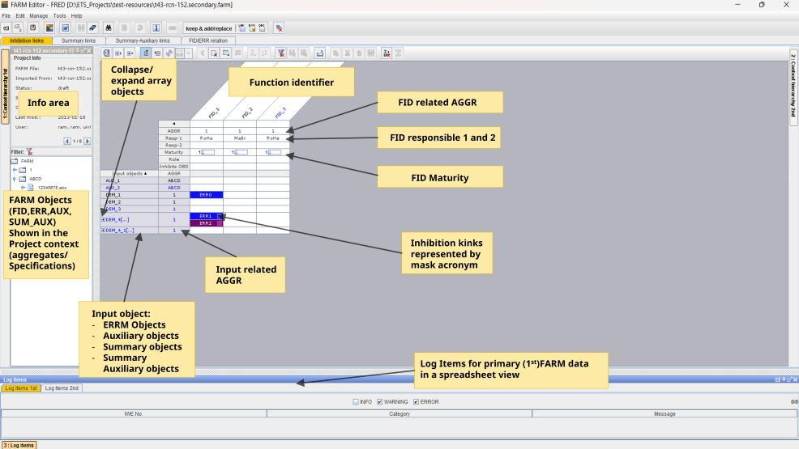
Main GUI with primary FARM data - Summary link view:
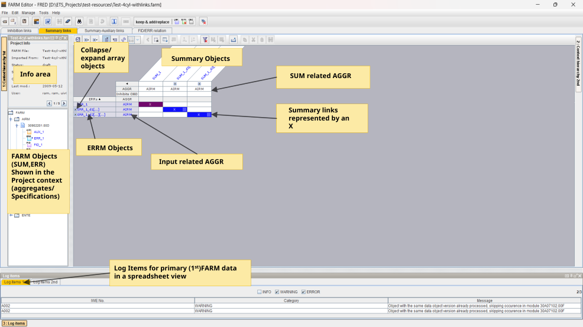

Main GUI with primary FARM data - Summary-Auxiliary link view
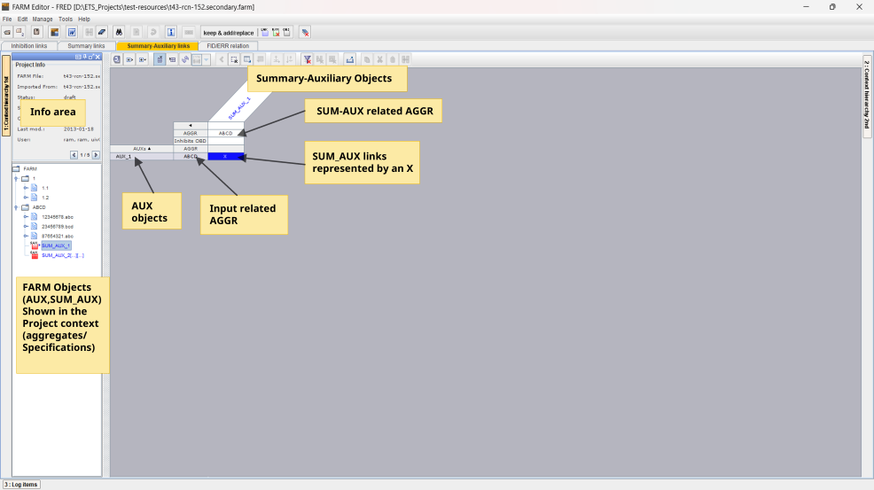
The FID/ERR relation shall document the relation between the symptom (ERR) and the corresponding function identifier (FID) as implemented inside the Software.
Normal use case: ERR_xyz is related to FID_ERR_xyz, i.e. that one function (could be one specification) will implement one symptom.
But also several symptoms (e.g. for electrical symptoms shortcut to ground, battery) can be related to one FID.
The FID/ERR relationship is characterized by either an inhibition relation (normal use case), if the FID is used to inhibit the corresponding diagnostic function or by a validation relation.
The validation relation is used to synchronize diagnostic functions, e.g. that cat efficiency diagnosis is waiting for O2 sensor diagnosis before handing over the result to the ERRM.
All links have to be set manually. In order to support the basic set of links a rule based generation of links is introduced.
This naming convention based generation of inhibition links for the FID/ERR relation can be activated by pressing the
 button.
button.Algorithm for the naming convention based link generation:
Precondition: All symptom related FID's have the starting name pattern: FID_ERR_. If a FID belongs to a symptom (ERR_xyz), the FID should have the same naming (FID_ERR_xyz)
1:1 relation between ERR and FID:
This rules will be applied for all scalar objects and all array objects. If as well the symptom and the FID are of the type array, they must have the same number of dimensions and the same dimension indices. For array links a link logic will be created.
As the previous FRED version did only support an X as link qualifier between ERR's and FID's, the X is mapped to INH for the migration.
Information & tree component
Summary:
The information & tree components shows the appropriate FARM objects, e.g. Function identifier (FID_*), ERRM objects (ERR_*), auxiliary objects (AUX_*) and summary objects (SUM_*) in the baseline context of aggregates and specifications. The items are shown in alphabetical order.
For array objects only the array definition is displayed, but not the array elements. The array elements can be shown inside the spreadsheet view by expanding the corresponding array definition object. In order to save some space, the index of an array is not displayed, but only [...]. The index is shown in the tool tip at mouse over.
The aggregates are represented by the 4char acronym, the specifications are represented by the 8.3 naming convention used at Vitesco Powertrain.
Within the information area administrative information about the loaded FARM file is provided within several pages.
Page 1: Project information
Page 2: Statistics on the inhibition links
Page 3: Statistics page 2
Page 4: Statistics page 3
Page 5: Clock (reserved for future information)
The information and tree component panel can be resized or completely hidden. To hide/show the panel just click on 1:Context hierarchy 1st
Information (page1) and tree componenet view:
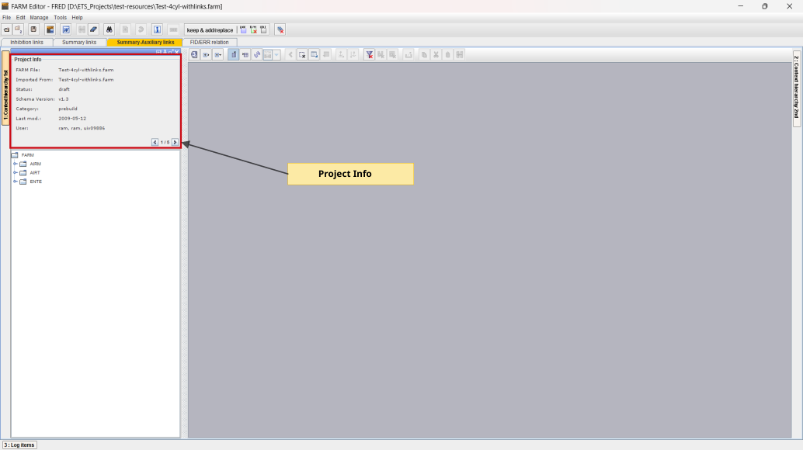Information (page 2) and tree component view:
The following values are presented in
the format:
Actual maximal value inside the FARM file / limit set within ECU
settings, e.g. 29/125
Color green: Actual max. value < 75% of the limit value
Color yellow: 75% < Actual max. value <= 100 %
Color red: Actual max. value > 100%
The tool tip is active for the numbers Inputs per FID / FID's per input. The tool tip is showing the name of the element having the current maximum value.
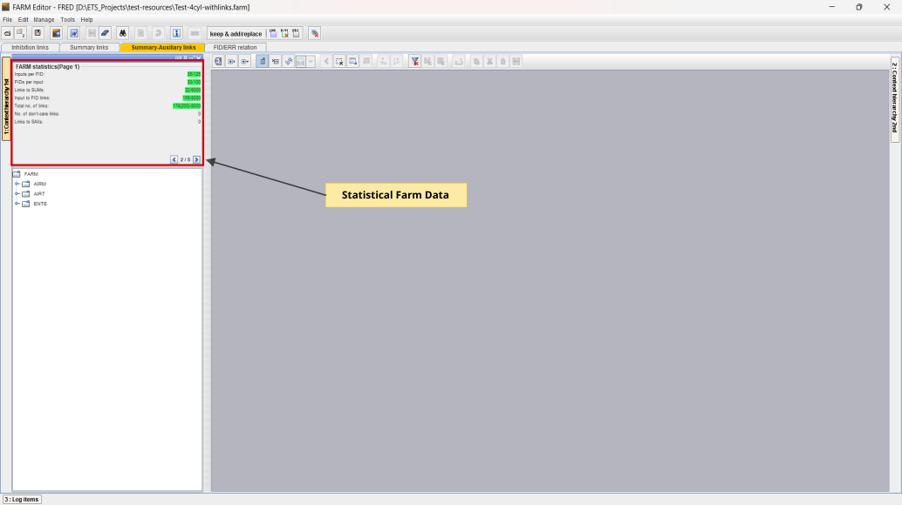
Information (page 3) and tree component view:(New page added in the release v1.6.0)
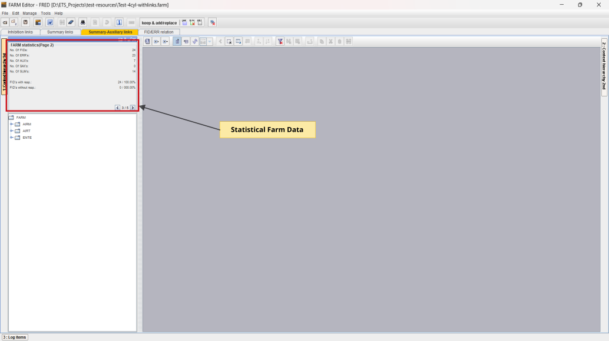
Information (page 4) and tree component view:(New page added in the release v1.6.0)
The tool tip ios active for the field "Used Masks"
Reorganization of tree nodes via drag&drop:
Summary objects and any manual added FID, ERR, AUX can be moved to another tree node by drag and drop. Multi selection is possible.
Aggregate and specification nodes are shown inside the tree view as specified within the FARM file. There is no possibility for rearranging those nodes.
Expand & collapse:
The tree can be fully expanded or fully collapsed by selecting a FARM tree node, activating the right mouse button context menu and activating the corresponding action. Individual collapsing and expanding is also possible using the left mouse double click for the corresponding node.
Resizing the info & tree component:
The tree window can be resized by navigating to the separation line between tree view and spreadsheet view, pressing the left mouse button and moving the mouse to the intended position.
FARM object formats / icons
Symbols for FARM objects inside the tree component:
Scalar summary object
Array summary object
Scalar FID object
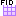 Array FID object
Scalar ERRM object
 Array
ERRM object
Array
ERRM object
Scalar auxiliary object
Array auxiliary object
 Scalar Summary-Auxiliary object
Scalar Summary-Auxiliary object
 Array Summary-Auxiliary object
Array Summary-Auxiliary object
All FARM objects, which are present in the spreadsheet view, are marked with an arrow in front of the the object name.
Colors / formating used for FARM objects inside the tree view:
- Black: Objects, that are extracted by a tool supported process from the Vitesco systems. They cannot be changed or moved inside the context hierarchy any more.
- Blue:
Manual added
objects. They were either
added manually by an user or added by a import / merge action.
Manual added FARM objects can be changed / moved inside the context
tree. No change is possible for those elements at
post-build.
- Violet: FARM-prepro objects. The origin attribute is FARM-prepro then those objects will be colored in violet in spreadsheet & tree view.
- and red: Severe inconsistency between data definition for complex FARM objects inside ADD and the table of failure at Software. The problem occurs, if not all array elements of an array definition are defined inside the table of failure file at Software. Red marked objects can only occur at the post build FARM file.
- Striked
through
ERR objects, which are not present in the table of failure,
but present in the specification (LIMAS-ADD-CVM). Striked through
FARM objects can only occur in the post build stage.
Striked through ERR objects will not be dragged to the matrix view.
Tree view filter
Summary:
Filter are provided for the tree view in order to show dedicated FARM objects on user demand. The filter are provided for the different FARM objects (FID, ERR, AUX, SUM) and for special use cases in addition.
Filter are only provided within the 'Inhibition links' tab, for the 'Summary links' tab and the 'ERR->FID Relation' tab no filters are provided, as the filter is already preconfigured. For 'Summary Links' tab only SUM's and ERR's are shown, for the 'FID->ERR Relation' tab only FID's and ERR's are shown.
Filter active: A filter setting can be configured by a left mouse click on the filter symbol.
No filter
active, all FARM objects will be displayed depending on
collapse/expand status of the tree.
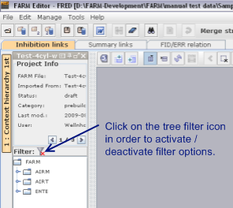
For setting a filter, click on the filter symbol and choose the corresponding filter setting (combination possible). The filtered tree is the basis for the drag & drop actions to the table view. The top level check box activates or deactivates the filter at all.
A filter to hide empty aggregate and specification nodes has been added. By default this is active. if the user wants to see all the nodes then he has to deselect the filter.
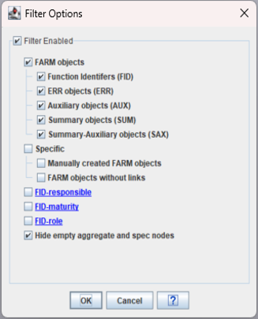
The following filter settings are provided:
1) Filter for viewing different types
of FARM objects
:
- Show only FID's inside the tree
- Show only ERR's inside the tree
- Show only AUX's inside the tree
- Show only SUM's inside the tree
- Show only SUM_AUX's inside the tree
2) Filter for viewing specific FARM
objects:
- Show only manually generated FARM objects
- Show FARM objects without direct
links.
This is interesting to create a grid view with e.g. all FID's which are
not yet inhibited.
If this option is set for ERR's which are only indirectly linked to FID's via SUM objects, those ERR's will also be displayed, as they are not directly linked to FID's.
3) Filter for viewing FID-objects based on the following meta data
- FID responsible person (Single & multi select of FID-responsibles is possible)
- FID-Maturity (Single & multi select of FID-maturities is possible)
- It is also possible to filter for empty
responsibles ( atleast one , none )
For deactivating filter on FID-responsibles or the FID-maturity, either deactivate individually all check boxes or press 'clear' and apply it (OK button).
Panel for the selection of FID-responsible persons:
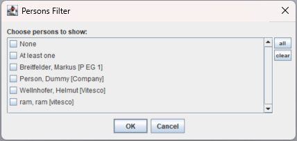
Panel for the selection of FID-maturity:
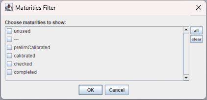
A combination of filters is possible.
The drag&drop actions from the tree view to the matrix view works based on the filtered view, i.e. if the FID filter is active and a context node is dragged to the matrix view, only the FID's within the context node are used to fill the matrix view. Also the logic for dragging the tree view objects to the matrix view does only use the filtered objects.
Tree view <-> Matrix view
Summary:
The objective is to use the matrix or spreadsheet view for viewing the links between inputs and outputs as known from Excel.
The content of the matrix view can be modified by the user in order to configure the view according to his needs:
- Add new elements to the matrix
view.
The matrix can be filled by drag&drop of FARM objects from the tree to the matrix view or by menu entries.
There are 2 alternative 'fill logics' to be selected by the user, either output or input oriented (details see below).
- Remove elements from the matrix
view.
Alternative 1: Select objects in the matrix view by selecting the corresponding objects and pressing the button or activating the right mouse context menu and choosing the corresponding command.
Alternative 2: Select object in the tree view and use the right mouse context menu to remove the corresponding objects from the matrix view. This functionality allows also to remove all objects from context nodes like specifications or aggregates. The corresponding functionality provided in the right mouse context menu, but will only have effect, if the corresponding objects can be removed from the matrix view.
- Choose between matrix individual drag&drop functionality and a synchronized drag&drop functionality for all matrix views (new within v.1.5.0).
User controls to modify matrix view:
Output oriented drag&drop logic for the not synchronized / synchronized matrix mode.
Depending on the logic (output or input oriented) the current spreadsheet view will be updated based on the FARM objects used for rows/columns.
Move selected FARM objects in the tree view to the matrix view. Multi selection is possible. The menu entry is available at the right mouse click context menu.
Either columns or rows are selected in the matrix view or FARM objects are selected in the tree view to activate the corresponding function. Select nodes or objects in the tree view and use the corresponding functionality inside the right mouse context menu.
If a selected node is dragged to the spreadsheet view, the object(same name) is searched for in the FARM file and also dragged into the spreadsheet view.
The background color of the columns indicate the relation to the FARM file (white background color = 1st FARM file, gray background color = 2nd FARM file). Row objects existing in both FARM files are not displayed within 2 rows, but for usability reasons only in 1 row. If a row object is not existing in the other FARM file, there is a inside the corresponding link cell.
Empty matrix. All elements visible will be removed for the not synchronized / synchronized matrix mode.
Logic to be applied for filling the spreadsheet view:
Logic: Output oriented:All linked input objects to selected output objects will be transferred to the matrix view.
The logic is only applied for filtered objects inside the tree view. Example: If a filter for FID's is activated and you apply the logic 'output oriented', no input will be dragged to the matrix view, as no input (ERR;AUX,SUM) is within the tree view.
You can activate the corresponding logic while pressing the corresponding button .
Example: If a FID object is selected in the tree view and transferred to the matrix view, all linked input objects (ERR, AUX, SUM) will be transferred to the matrix view and the corresponding links are shown.
If a hierarchy node (root / aggregate / spec) is chosen, the logic will be applied for all relevant FARM objects below.
Logic: Input oriented:
All linked output objects to selected input objects will be transferred to the matrix view.
The logic is only applied for filtered objects inside the tree view. Example: If a filter for ERR's is activated and you apply the logic 'input oriented', no output will be dragged to the matrix view, as no output (FID) is within the tree view.
You can activate the corresponding logic while pressing the corresponding button .
For ERR's there's a specific logic implemented, that in addition to the selected ERR's also all linked SUM's are transferred to the table view.
Example: If a ERR object is selected in the tree view and transferred to the matrix view, all linked FID's (use case: inhibition matrix) will be transferred to the matrix view and the corresponding links are shown.
If a hierarchy node (root/ aggregate / spec) is chosen, the logic will be applied for all relevant FARM objects below.
All FARM objects, which are transferred to the matrix view, are marked with an arrow in front of the corresponding FARM objects inside the tree view.
New for v1.5.0: The result depends on the activation / deactivation of the synchronization mode for the matrix views. If the synchroneous mode is active, the corresponding objects will be dropped to all matrix views (Inhibition links, Summary links, FIE/ERR relation)
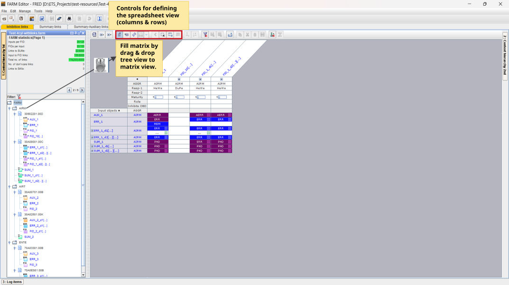
Matrix or Spreadsheet view
Summary:
The spreadsheet view is used for the different use cases:
- Show inhibition links
- Show summary links
- Show the FID->ERR relation
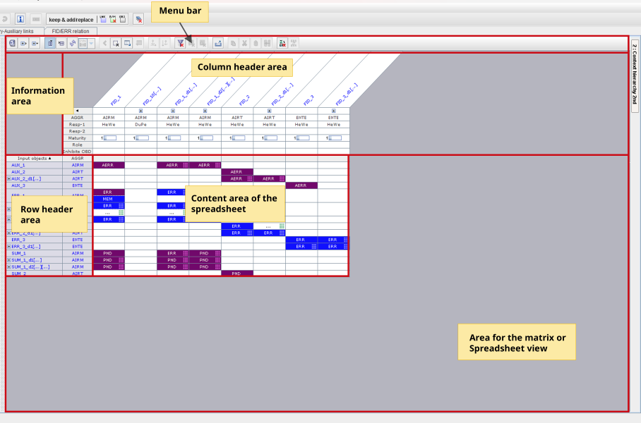
General functionality within a spreadsheet provided by the menu bar icons
Basic matrix setting:
Table settings: The following table properties can be changed by the corresponding panel, which will pop up when clicking on the table settings icon:
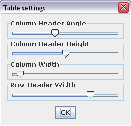
.
Expand / Collapse all complex array rows/columns:
Expand all complex row objects
Collapse all complex row objects
Expand all complex column objects
Collapse all complex column objects
As a result of the expand functionality all elements of a complex object (array) are shown below the array definition.
The array elements have fixed indent and the prefix --> before the name of the element.
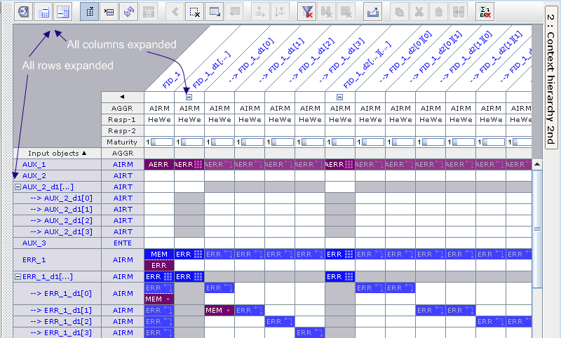
Deactivate the manual resorting for columns/rows, if a manual resorting was done before:
After the manual resorting of columns / rows by drag & drop actions the manual resorting can be deactivated separately for rows/columns by pressing the corresponding buttons. The buttons are only active, if a manual resorting was done before. All rows and columns, which are manually resorted are marked with a within the row/column header.
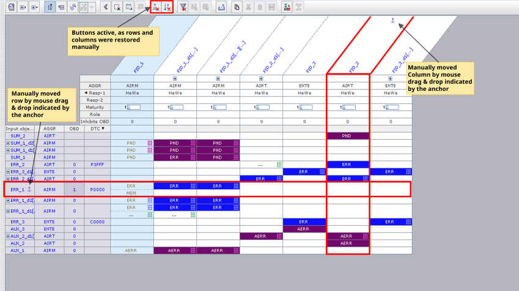
Spreadsheet view filter:
Table Content Filter active. Show only filtered rows/columns.
Table content filter inactive.
Compare filter for 2 loaded FARM files active. Differences are shown using green/red bars inside link cells.
Compare filter for 2 loaded FARM files inactive
Compare filter for user selected rows or columns within the spreadsheet view active.
Compare filter for user selected rows or columns within the spreadsheet view inactive.
Details for the filter see FilterForMatrixView
Prepare spreadsheet view for pdf / Excel export:
In order to be able to export the spreadsheet view for viewing / review / print purposes without using FRED a corresponding functionality is provided.
Copy / cut / paste functionality for FARM links:
In order to easily modify the matrix content a copy/cut/paste functionality for link cells is implemented. Copy / cut / paste can either be used by the well known keyboard commands or by the menu bar icons.
The following basic copy&paste use cases are supported:
- Copy&paste of a single links to either one target cell or to a set of target cells, which are selected before the paste operation.
- Copy&paste of a complete row or column to other rows/columns.
Merge FID/SUM related links:
Summary link resolver:
FID -> SUM links links are resolved by FID (->SUM) -> ERR links (view filter only), if the SUM object is linked to ERR objects.
Resolved SUM links are shown having a
special summary icon.
This does
not have any effect on the FARM data.
Summary objects are shown (default).
Details for the summary link resolver see SummaryLinkResolver
Column header functionality
Each column header entry (for inhibition links it's the FID name, the AGGR relationship, the responsibility and the maturity) can be sorted alphabetically by clicking on the corresponding sorting arrow in at the left side of the corresponding column header object.The values for the responsibility and the maturity inside the column header (inhibition link tab only) can be changed directly either for single cells or for a multi selection of FID columns.
In order to change a single value just click inside the cell and change the value using the selection list.
For a multi selection you have to multi select the FID columns and afterwards change the value of the cell by clicking on the cell pressing in addition the STRG key. The change will be applied for all selected FID columns.
Change of a FID responsible 1 for one FID:

Change of a FID responsible 1 for multiple FIDs:
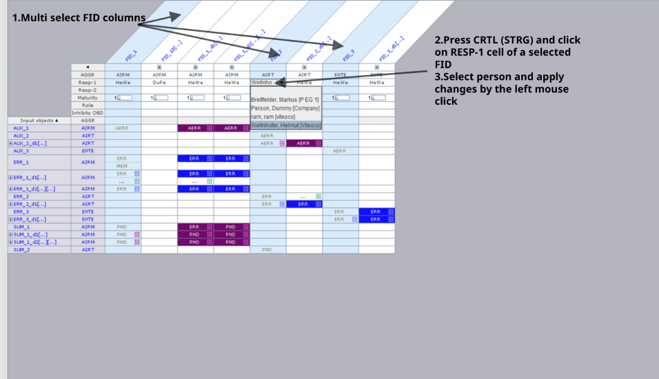
Maturity icons used for the FID column header:
Maturity level 0 for FID's: UNUSED
Maturity level 1 for FID's: ---
Maturity level 2 for FID's: PRELIMCALIBRATED
Maturity level 3 for FID's: CALIBRATED
Maturity level 4 for FID's: CHECKED, no inhibition link change for those FID's is possible any more
Maturity level 5 for FID's: COMPLETED, no inhibition link change for those FID's is possible any more
Row header functionality
Each row header entry (for inhibition links it's the name of ERR's AUX's, SUM's, the AGGR relationship and on demand 2 columns for the OBD information) can be sorted alphabetically by clicking on the corresponding sorting arrow at the top of the corresponding row header object.
The row header can be configured (number of displayed row header columns) by a right mouse button context menu. The context man is active when clicking in the row header area.
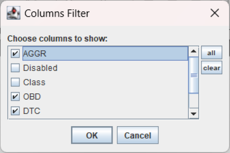
Icons used inside the matrix content area
Icons used for the inhibition link cells:
Icon for a mandatory complex inhibition link (inhibition between complex objects)
Icon for a optional complex inhibition link (inhibition between complex objects)
 Icon
for complex inhibition link node, where only manual generated
links between single array elements are set (either mandatory or
optional)
Icon
for complex inhibition link node, where only manual generated
links between single array elements are set (either mandatory or
optional)
Icons (mandatory/optional) for generated inhibition link (Link logic defined at the level of the complex object)
Icons (mandatory/optional) for manual generated links between array elements, where no link logic is defined.
Color scheme for the matrix view:
The inputs and outputs are represented with the same color scheme than within the tree view (text color, background color).
The links are represented in different colors for the categories 'mandatory' and 'optional'.
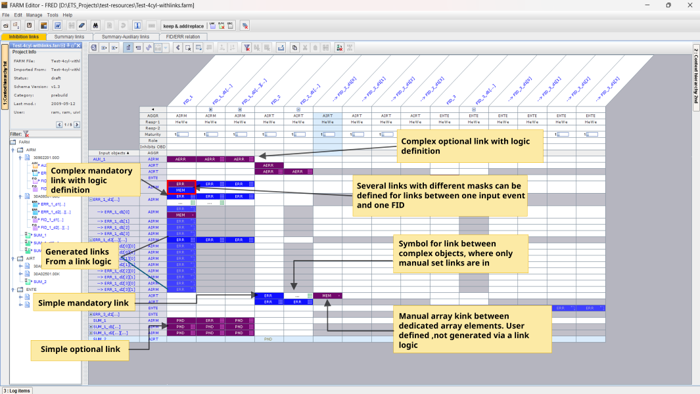
Filter for the matrix view
Summary:
In order to filter the matrix view on user demand, several filters are available, which can be combined. Please be aware, that active filters may influence the performance of the related matrix view actions like modifying inhibition links. There are two categories of filters, which are available:
Content filter, which filters the displayed columns/rows, partly the displayed link masks of the matrix view
Compare filter, which provides possibilities to compare either user selected columns/rows or name-identical columns within 2 FARM files.
The compare filter will always work on the content filtered matrix view (if content filter list active). This offers the possibility to first filter the content and afterwards apply the comparison on the filtered content.
Content filter
The content filter will reduce the number of rows/columns due to the filter options set by the user. The content filter panel will pop up by the mouse click on the corresponding symbol (toggled):., if content filter is inactive
The content filter is available for all matrix views (Inhibition links, Summary links, FID/ERR relation), but the provided options differ.
Content filter for the Inhibition links, where a specific filter can be applied for masks and the link category (new within version v1.3):
Details for the masks filter: The masks are derived from the list of defined masks. Multi selection possible.
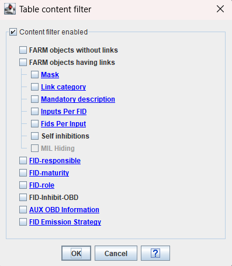 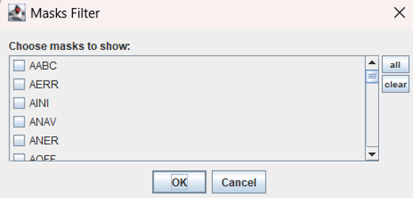
Content filter for the Summary links:
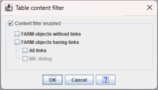
Content filter for the FID/ERR relation view:
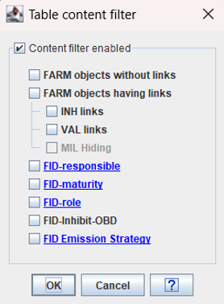
Content filter for the Summary-Auxiliary links view:
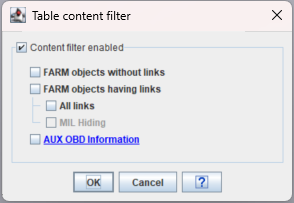
The options inside the panel will be active, if the content filter is enabled at all (check box at the top of the filter panel), several options can be specified in parallel.
Details for the content filter option: FARM objects without links
If this option is selected, all rows/columns will be shown, which are empty (no links inside).
Details for the content filter option: FARM objects having links -> All links
If this option is selected, all rows/columns will be hidden, which are empty (no links inside).
Details for the content filter option: FARM objects having links -> OBD conflicts
Show all OBD relevant FIDs , which are controlled by a mixture of OBD relevant symptoms and not OBD relevant symptoms.
The filter can only show a valid result, if a calibration data file is loaded and the FID-ERR relation matrix is calibrated. In order to load a calibration date file see LoadCalibrationData. As the filter can be combined within other filters (e.g. mask-filter, FID-responsible filter) the result depends on the combination of filters.
Details for the conteption:nt filter o FID-responsible, FID-maturity
FID-responsible (1st and 2nd) and FID-maturity is related to the FID's inside the inhibition link matrix or FID/ERR relation matrix.
It will have no effect within the summary link matrix, as no FID's are present.
I
Details for the content fileter option: Inputs Per FD(newly indroduced within v1.6)
It will filter and show only those FID's which falls under the range specified by the user.
Compare filter
The compare filter will either compare the spreadsheet view of two FARM data sources or will compare user selected rows or columns. The compare algorithm will always compare 2 corresponding link cells / responsibility cells / maturity cells and show the corresponding result as a colored bar inside the corresponding link cells.The compare filter will add a red or green vertical bar inside the link cells of the spreadsheet view in order to indicate, that the corresponding cell content is identical or not based on the compare options.
The compare filter will also reduce the the number of columns/rows dependent on the compare options.
Compare of 2 FARM data sources:
The compare will work on the link cells / responsibility cells / maturity cells provided in the spreadsheet view, so the compare can be applied on several abstraction levels of the complete FARM data.
The algorithm will compare the link cells / responsibility cells / maturity cells of 2 different FARM files with identical input /output names. In order to display the name identical columns of the 2 FARM files near to each other, the second level sorting is always based on the object name, never mind whether the first level sorting is based on the aggregate, responsible(1st or 2nd) or maturity.
Toggle icons for the compare of 2 data sources:
Compare filter active
Compare filter inactive
The corresponding functionality will only be provided, if 2 data sources are loaded.
Compare of user selected rows or columns:
The compare will work on the link cells of selected columns or rows. The column or row, which is selected first, will be the reference for the comparison. For the selection of 2 rows/columns it doesn't matter, but if >2 rows/columns are selected the sequence of the selection is important, as it determines the algorithm for the comparison. The differences in the link cells are shown in comparison to the reference column/row, which is the firstly selected one.
Toggle icons for the compare of user selected rows or columns:
Compare of user selected rows or columns active
Compare of user selected rows or columns inactive
The corresponding functionality will only be provided, if at least 2 rows or columns are selected.
Compare filter options:
The compare filter options are generic never mind, whether the compare of 2 data sources or the compare of user selected rows/columns is selected.
The compare will be activated by checking the box 'Compare Enabled' on the top of the panel.
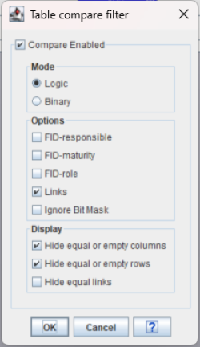
The are two basic compare modes possible
Logic compare mode
The logic compare is intended to support the compare of the link definitions. It will bring any difference in link definitions, whereas the complex link logic and the category of the link are part of the comparison algorithm.
The following attributes are taken into account for the logic compare:
- Mask : Acronym, bit definition
- Link category (optional / mandatory)
- Link logic (if available): Iterator, modulo, offset
- Name mapping of ERR's (if there is one)
No descriptive parts are analyzed for the logic compare view.
Binary compare mode:
The binary compare is intended to support the compare of inhibition links at the binary level. Therefore, no complex link definitions are taken into account, but only the links between array elements, and no link category.
The following attributes are taken into account for the binary compare:
- Mask: Acronym, bit definition
- Name mapping of ERR's (if there is one)
Compare options:
Selection of related content to be taken into account for the comparison. For the Summary links the only option, which is offered are Links, as FID-responsible and FID-maturity are not assigned to summary objects.
- Links
- FID responsible (only for Inhibition links and FID/ERR relation)
- FID maturity (only for Inhibition links and FID/ERR relation)
- FID role (only for Inhibition links and FID/ERR relation)
Display options:
In order to customize the compare result view, especially to reduce the number of filtered column/rows, the following options are available
- Hide equal or empty columns
- Hide equal or empty rows
- Hide equal links
If the option 'Hide equal links' is enabled and a merge operation is performed from the 2nd to the 1st FARM file with the consequence, that the links are equal after the merge, the corresponding link cell will disappear from the view, as equal links are not displayed. Please be aware, that the compare result is only showing the different links, if you want to see all links, uncheck this option.
This option is especially helpful in order to quickly see, whether there are differences at all.
Compare view examples
1) Logic compare view of 2 FARM data sources:
The compare view is working on the spreadsheet view only (not on all FARM data) and providing the result for the comparison of 2 corresponding link cells within the primary and secondary FARM file.
Complex link nodes are marked as different, if either the complex link definition is different or if additional different manual defined links between array elements are in.
Sorting of columns shall be done based on the name !
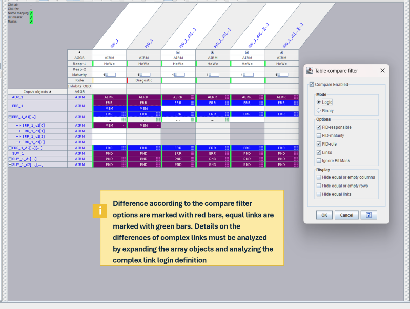
2) Binary compare view for 2 FARM data sources for unequal links only:
The compare view is working on the spreadsheet view only (not on all FARM data) and providing the result for the comparison of 2 corresponding link cells within the primary and secondary FARM file.
The binary compare view will only take into account differences, which are relevant at the binary level (inside the ECU), but will not take care about logic differences (e.g. complex link definition different or category of the link different)
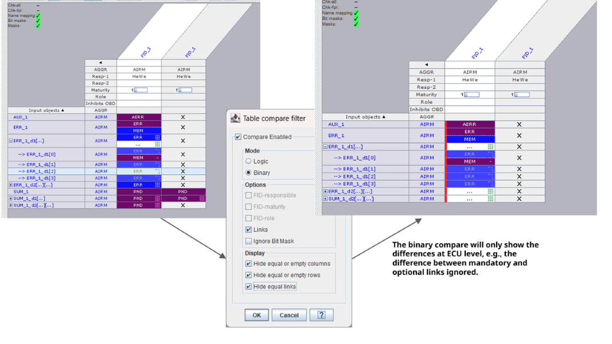
3) Compare view for 2 user selected FID columns within 1 FARM data source before the filter is activated:
The compare view is working on the user selected columns or rows inside the spreadsheet view. The selection can be done for columns/rows within 1 or 2 FARM data sources.
The comparison is provided for >=2 selected columns or rows, where the order of the selection defines the comparison logic. The first selected row / column is always the reference for the comparison.
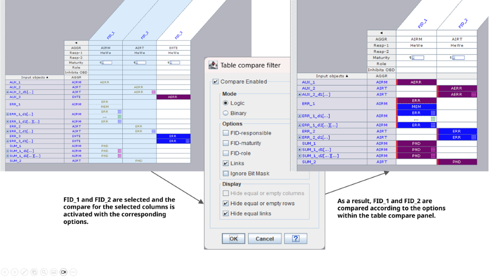
Compare view for 3 user selected FID columns within 1 FARM data source before the filter is activated:
The compare view is working on the user selected columns or rows inside the spreadsheet view. The selection can be done for columns/rows within 1 or 2 FARM data sources.
The comparison is provided for >=2 selected columns or rows, where the order of the selection defines the comparison logic. The first selected row / column is always the reference for the comparison.
In the example below FID_1 was selected first and is therefore the reference column for the comparison.
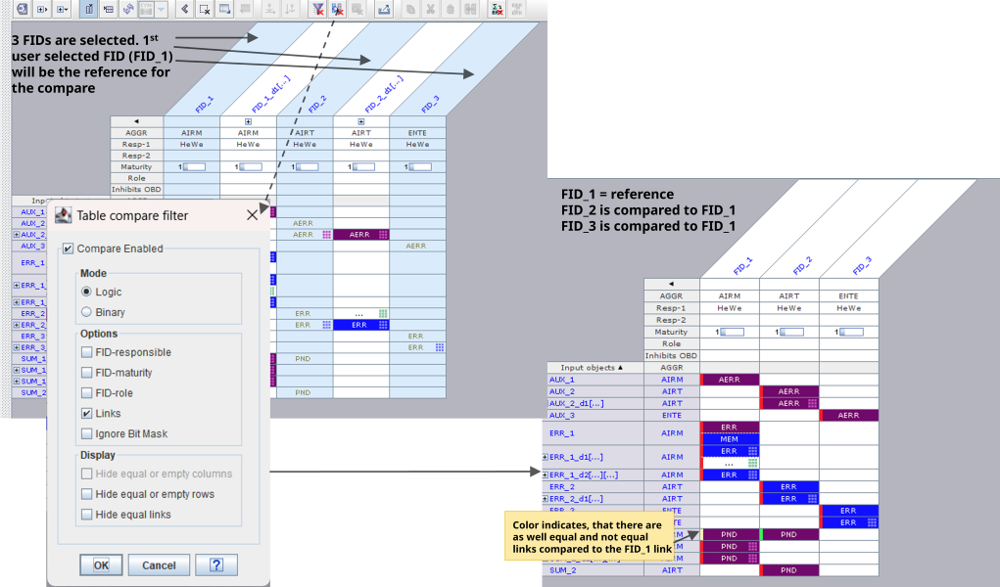
Summary link resolver
There is a special feature implemented to resolve the summary object related links and show the result within the spreadsheet view as direct links between the ERR's and the FID's. The summary link resolver is useful, if e.g. a FARM HEX file is loaded and the corresponding summary objects inside the HEX file cannot be assigned to the original summary object name. So a comparison of the HEX related FARM data to a FARM file will fail for all summary object related links. If the summary related links will be resolved, the comparison will work fine.Resolving the summary objects means:
- Remove the SUM's from the spreadsheet view
- Show the links between ERR's and FID's using a SUM object directly into the spreadsheet view using a specific icon inside the link cell :
optional resolved summary link
The links cells containing resolved summary links can't be edited, as it's only a generated view.
Missing ERRM objects, which are necessary to show the fully resolved view, are automatically added to the table view. When deactivating the SUM link resolver, those temporary added ERRM objects are removed from the table view in order to get exactly the elements displayed as before.
The summary link resolver is only provided for the inhibition link matrix.
Toggle icons represent the summary link resolver:
- Summary links resolved
- No summary links resolved, view represents the link representation as defined inside the FARM file.
Example for resolving summary links:
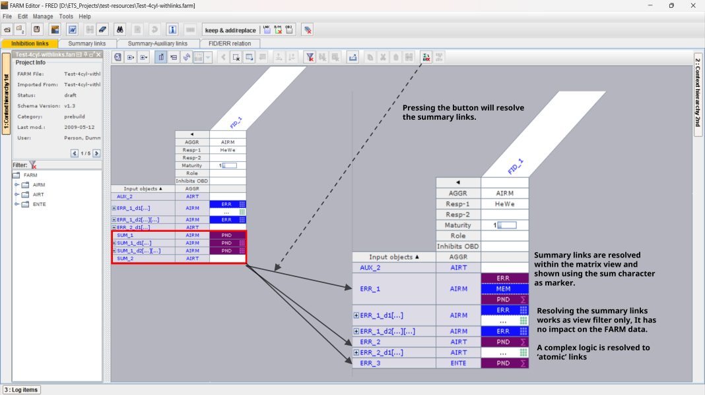
Log items
Summary:
The log items show information, warnings and errors for the following FARM related operations:
- Add new person
- Load FARM exchange file to 2nd data source (problems are reported)
- Any link related copy&paste operation within the spreadsheet view
- Any merge related operation from the 2nd to the 1st FARM file
No log items are reported for delete operations and single modify operations via the link editors (inhibition link / summary link).
The log items are shown at the bottom of the main panel, but can be fully collapsed or resized to a minimum.
The log items are provided for the primary and secondary FARM file by choosing the corresponding tab.
For all copy & merge operations log items are written. Each merge action is recorded according the the log item class (information, warning, error).
As for complex merge operations the file will get very large it is recommended to review and delete the log items at each session.
Log items can be deleted individually by choosing log items in the corresponding table view or they can be deleted in one shot using the Manage->Clean functionality of the main menu bar.
Please take care to delete log items regularly before the save stage, as they increase dramatically the file size and slow down the performance of the user actions.
v1.4.0 onwards the log items which is of type INFO & WARNING will be deleted by default at save stage. The log items of type ERROR will not deleted but info would be provided to the user to analyse.
v1.5.0 onwards no information log items will be recorded any more due to performance reasons.
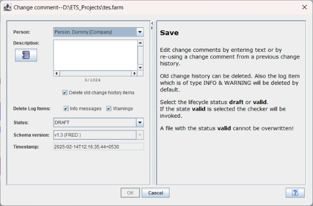
Modify pre-build FARM matrix (primary FARM file)
Summary:
The objective of the pre-build phase is to create a valid FARM matrix including all mandatory inhibition links at least. The pre-build FARM file is used for the Software build process in order to generate the corresponding FARM data within the ECU executable.
The FARM data can be managed with the FRED only.
Constraints:
FRED installed. User trained.
Load / save primary FARM file
Summary:
The FARM data are represented in FARM xml files, which can be managed within a file system. FRED provides the following file management operations:
Load FARM
file from file system
Save FARM file to file system
Save FARM file to file system as
Export FARM spreadsheet views as (partial FARM file)
File load
For the loading stage the corresponding FARM format is checked including the checksum. If the format is not valid, the file cannot be loaded and the user gets a corresponding message. If only the checksum is not correct the user gets a message, but can continue to load the FARM file.
In addition the file name is checked for consistency. If the file name, which is stored inside the FARM file differers to the physical file name, a warning is issued and the user can decide to correct the file name mismatch (file will be updated at the load stage).
A mismatch of the file names is a consequence of renaming the FARM file at the file system without use of the FARM editor.
After the file load stage the spreadsheet views of the last save stage for the corresponding file will be restored, if the file was not modified by another person in the meantime.
A user login for the modification operations is necessary, because the modification of e.g. links is tracked based on the time stamp and the selected user.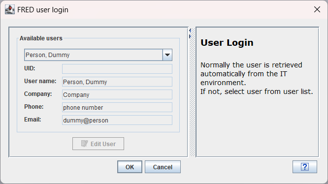
File load panel:
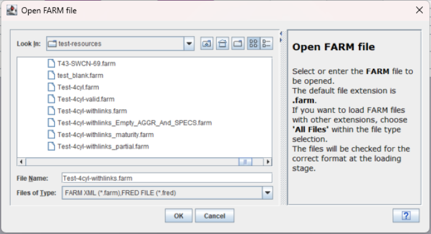
File save (as)
For the saving stage a change comment has to be given and the life cycle status has to be set.
Valid files cannot be overwritten. If the life cycle is set to 'valid' at the save stage, it will be saved with the attribute read only.
The checker will be automatically started, if a FARM file shall be saved with life cycle status 'valid'. If the checker detects an error, the file cannot be saved as 'valid' file, but only as 'draft'. All errors have to be corrected before save with life cycle status 'valid' is possible.
All save operations use a corresponding file management user interface as for the file load stage..
Find below an example for a save menu.
At the save stage the following menu will appear for change comment entry and setting the life cycle status:For the change comment either a user defined text can be entered or he can choose from the existing change history pressing the corresponding button: .
By default log message which are of type info and warning wll be deleted. The user can now delete the old change history. "Save As" and "Export FARM spreadsheet view as" functionalities will deleted by default, The user has to uncheck if he does not want to delete the old change history
Constraints:
Save / save as with life cycle status 'valid' is not possible as long as the checker detects errors within the FARM file.
Export FARM spreadsheet views as partial FARM file
Summary: In order to save a partial FARM file with user selected/filtered FARM objects/links a specific functionality is implemented (new within v1.3).Based on the spreadsheet views (Inhibition links, Summary links, FID/ERR relation) all corresponding FARM objects, attributes and links will be exported to a partial FARM file, which are present in the corresponding views. If a view is empty, no corresponding FARM object /link will be exported.
In order to really show only the relevant context nodes (aggregates, specifications) all context nodes will be suppressed in the partial FARM file, where no FARM objects are assigned to.
Active content filters are taken into account for the partial FARM file export.
The functionality is especially useful to distribute the work on managing links to several FID responsibles. Based on the filters for FID responsibles, several partial FARM files could be exported ( one for each FID responsible), which can be later on easily merged into a complete project related FARM file.
If a partial FARM file is loaded, the functionality to export / import binary FARM data is deactivated.Workflow:
Open primary FARM file-> Configure matrix views on user demand -> Select menu item File - Export FARM spreadsheet views as -> Specify a corresponding name -> press OK -> Enter a change comment -> Press OK.
The file will appear afterwards in the Recent file list in order to quickly access it.
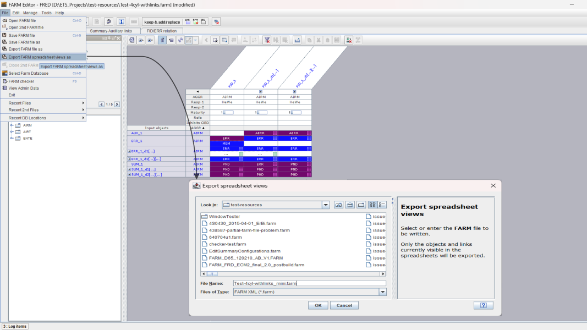
Load name mapping for ERRM symptoms (ERR's)
Summary:
There are rare cases, where the names of ERRM objects (symptoms) as defined inside the specification do not match to the names used inside Software. Those cases are limited to array elements only, as inside SW no array definitions are used for the table of failure index.
A name mapping has to be loaded once in addition to the .farm file and is then stored within the .farm file permanently. The name mapping can be changed by a newly loaded name mapping file of by deleting the name mapping.
There is a default mapping of names, which is supported by the FARM tool chain.
Default mapping:
Example: ERRM object NC_IDX_ERR_XYZ[NC_CYL_NR], NC_CYL_NR = 4
|
Specification name for array elements derived from ADD definition |
SW name as used inside the table of failure |
|
NC_IDX_ERR_XYZ[0] |
xyz_0 |
|
NC_IDX_ERR_XYZ[1] |
xyz_1 |
|
NC_IDX_ERR_XYZ[2] |
xyz_2 |
|
NC_IDX_ERR_XYZ[3] |
xyz_3 |
Special mapping:
Example: Diagnostic object NC_IDX_ERR_XYZ[NC_CYL_NR], NC_CYL_NR = 4
|
Specification name for array elements derived from ADD definition |
SW name as used inside the table of failure |
|
NC_IDX_ERR_XYZ[0] |
xyz_cyl1 |
|
NC_IDX_ERR_XYZ[1] |
xyz_cyl2 |
|
NC_IDX_ERR_XYZ[2] |
xyz_cyl3 |
|
NC_IDX_ERR_XYZ[3] |
xyz_cyl4 |
For special mappings, which do not follow the default mapping, a dedicated name mapping file has to be provided. That name mapping file can be loaded and assigned to the primary FARM file. Once the file is loaded, the mapping data are stored inside the FARM file. The mapped names will be used within the editor for displaying the corresponding elopements (inside inhibition matrix view and summary link view).
A name mapping file can be set up using a XML Editor and using a defined xml schema for that.
The corresponding template will be provided by PEG. The maintenance of the mapping file shall be done in common by the FARM responsible at system and SW level.
Extract from the name mapping file for the use case above:
<map>
<value>ERR_XYZ[0]</value>
<alias>ERR_XYZ_CYL1</alias>
</map>
<map>
<value>ERR_XYZ[1]</value>
<alias>ERR_XYZ_CYL2</alias>
</map>
<map>
<value>ERR_XYZ[2]</value>
<alias>ERR_XYZ_CYL3</alias>
</map>
<map>
<value>ERR_XYZ[3]</value>
<alias>ERR_XYZ_CYL4</alias>
</map>
Constraints:
Names used for the name mapping must be unique within the FARM file
The name mapping file must follow the corresponding schema definition.
Workflow:
Start FRED -> Load primary FARM file -> select Tools -> select Import ERR related name mapping -> Use file dialog to select file -> press OK ->name mapping will be loaded.
In case of success a corresponding message will be provided, in case of problems the corresponding problem will be reported.
A typical problem could be, that the name mapping is also applied for FID/AUX/SUM-objects, the name mapping is not applied for all elements of an array or the name is already existing in the name space of the FARM file.
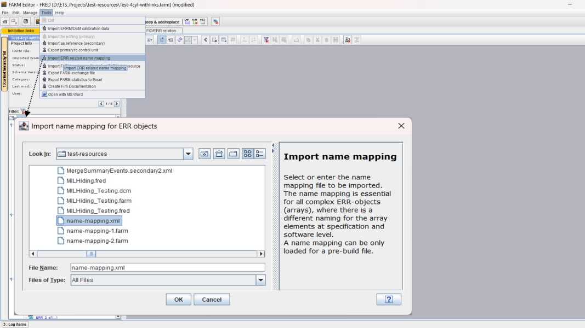
If a different name mapping exists in the primary and secondary FARM file, it is displayed in the spreadsheet view on the top left corner and the corresponding ERR related arrays (definition & elements) are marked with light orange color.
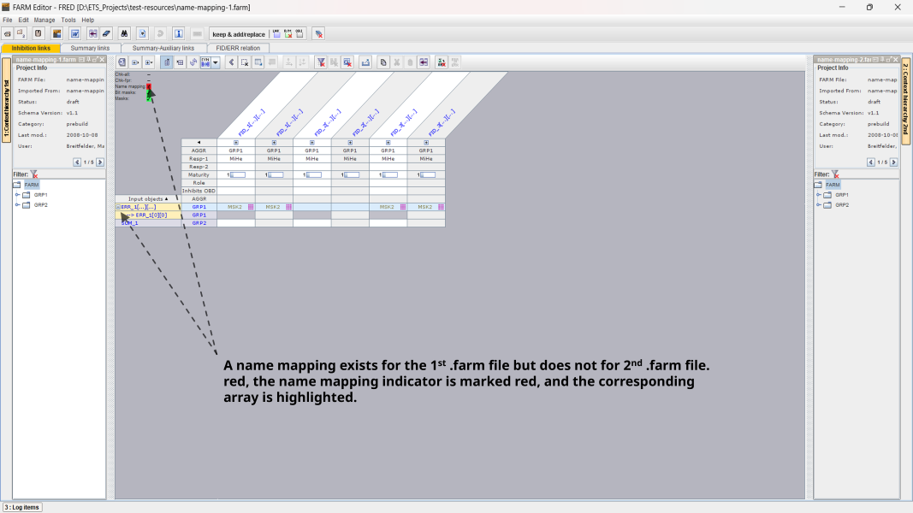
Manage FARM ECU settings (FIM general)
Summary:
There are FARM configuration data to be set at the pre-build stage. All relevant data can be set using the FARM ECU settings panel. Within the panel a context help is available for the different configuration data to be set.
For each setting a information is available pressing the corresponding i - button. Therefore no more detailed information is given here.
The FARM ECU settings cannot be changed at the post-build phase, therefore the OEM version of FRED will provide the entries only in a view mode.
Constraints:
Values must be set before entering the build process, as the values cannot be changed afterwards.
Workflow:
Start FRED -> Load primary FARM file -> select Edit -> select FARM ECU settings
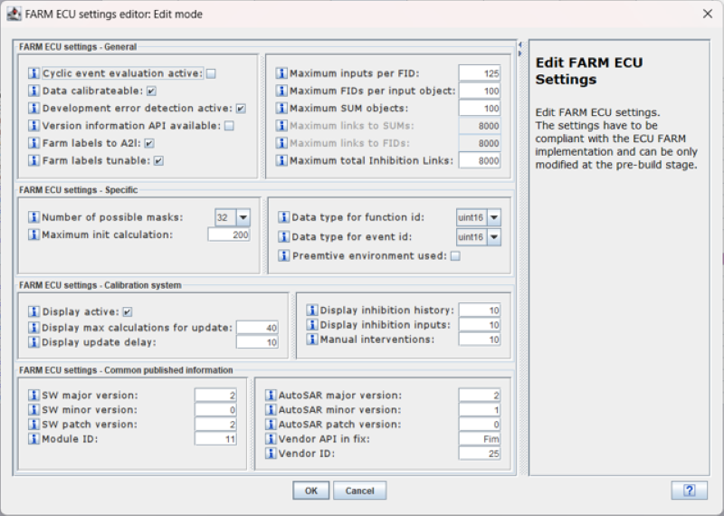
Manage masks
Summary:
Masks are necessary to link input objects (i.e. ERRM objects, auxiliary objects or summary objects) to function identifiers. The Inhibition mask defines which information - delivered by the used error management aggregate (e.g. ERRM 6.0) or auxiliary object management is significant for the link in which the mask is used.
There exists no tool-based check if the defined mask values fit to the interface of the error management implementation in the ECU. Therefore it is up to the user to check initially and after changes in the error management interface if the mask value definition and the error management implementation fit together.
Masks for managing ERRM objects are different to those managing auxiliary objects. They are classified by the type (ERR and AUX).
Masks have to be entered/modified inside FRED. For the management of masks, a special edit panel is available. Details for managing masks you find in the context help of the panel.
Edit -> FARM inhibition bit masks
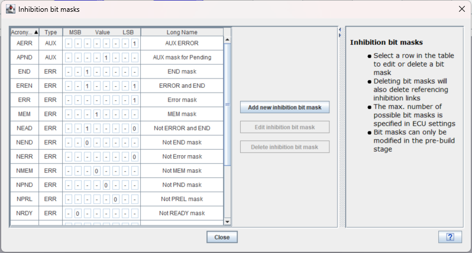
The number of masks you can specify is limited by the configuration value inside FARM ECU settings.
In this example the value is set to 5, i.e. you can create 2^5 = 32 masks
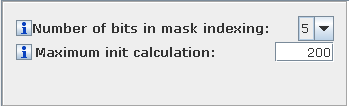
Mask acronyms shortly identify different masks. The acronym consists of maximal 4 characters. The acronym is used on several locations in the FARM editor for identifying masks in a inhibition link - therefore use significant characters to express the functional background of the mask. Examples could be mask acronym "ERR" for the diagnostic status information "error detected" or "PND" for the diagnostic status information "diagnostic pending".
Mask acronyms have to be unique within one FARM data base. Each mask acronym may only be defined once.
Mask long names are used to describe further the functional background of a mask in a significant way. The long name has to be unique within one FARM configuration data base. The mask long name is an obligatory entry and will be also displayed at the mask selection within the inhibition link edit panel..
The mask long name length is limited by the editor.
The mask description is used to provide further detailed description on the defined inhibition mask.
The mask description is an obligatory entry.
Mask values
|
Single bit value of mask |
Value description |
|
1 |
Bit is significant. A value of 1 indicate that the information on bit position x in the diagnostic object status information evaluates to TRUE if the bit is 1. |
|
0 |
Bit is significant. A value of 0 indicate that the information on bit position x in the diagnostic object status information evaluates to TRUE if the bit is 0. |
|
- |
Bit is don't care and therefore not evaluated during processing of the input object status. In case all bits of a mask definition have the bit value "-", this results in a inhibition link which is active neglecting the input objects status, as all bits are don't care. The linked function will always be inhibited. |
|
X |
Special value used to define a dedicated "no inhibition link" mask. If all bits of a mask are set to this value, the user can use this mask to indicate e.g. in the inhibition matrix that between an input and output no effective inhibition link shall be set and exist. |
If a masks with XXXXXXXX is used, the corresponding link using this mask is displayed specifically inside the spreadsheet view, as the link will have no effect on the FARM related ECU functionality, it is for documentation reasons only. The link can be used to document hard coded links inside the ECU-SW or to add specific hints for this link cell (e.g. no link shall be set here). Modify, compare and merge functionality for link cells using the XXXXXXXX mask will work as for 'normal' masks, the only difference is the different display mode within FRED and the specific marking of those links inside the documentation (field greyed)
The inhibition liks cells with an XXXX maks cannot be modifed with the FRED OEM edition from v1.5.0 onwards.
.
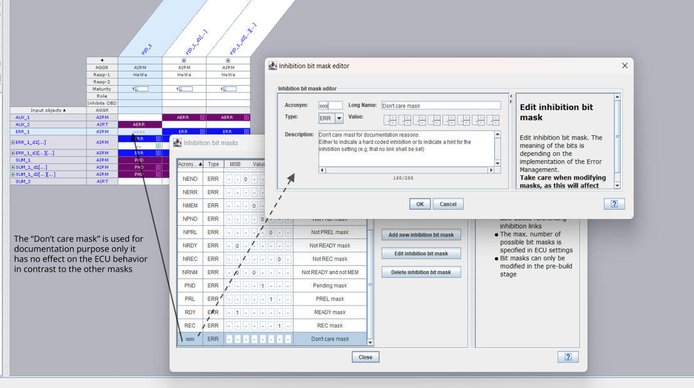
Edit panel for masks:
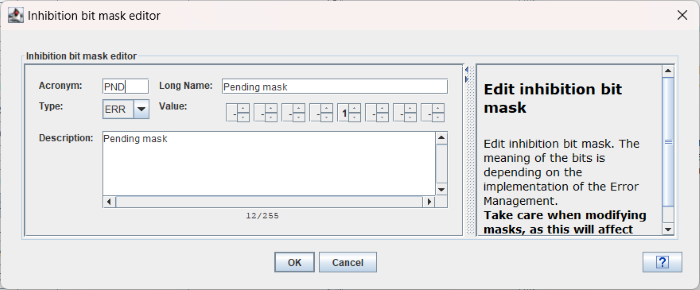
Constraints:
- Masks can only be merged/created/changed at the pre-build stage.
- Mask acronyms and long names have to be unique within a FARM configuration file
- Masks using the bit value "X" have to define this value for all bits within the mask
- If masks are deleted which are already used in any Inhibition link the corresponding link(s) are deleted from the FARM configuration upon user acknowledge
Manage summary objects
Summary:
Summary objects are used to links more efficiently a set of diagnostic input objects to a function identifier. In order to use summary objects, they have to be defined first.
Summary objects can be modified at the pre- and post build phase.
Inside FRED a specific panel for editing summary objects is provided.
As summary objects shall be assigned to context nodes inside the tree view, first a context node shall be selected and then a summary object can be added.
Constraints:
Number of summary objects which can be added is limited to the number specified within FARM ECU settings.
Workflow:
Navigate to the corresponding tree node (either top level FARM node or aggregate node or spec node) and use the right mouse button context menu.
Choose: Add new SUM object. A corresponding panel will pop up for the necessary user entries.
In order to define a complex array object just choose the corresponding radio button, specify the number of dimensions and the corresponding dimension indices.
Only array indices, which are defined in the FARM file can be used (pop up list).
GUI example for creating a new simple SUM object:
Within the edit panel you have to specify the details of the summary object. Summary objects can be defined as scalars or arrays of 1...3 dimensions.
A description is mandatory. The prefix of the name (SUM_) shall not be changed.
After pressing the OK button the summary object is added to the tree at the specified context node. As it is a manual generated object, the name is displayed in blue letters.
You can reassign a summary object to another context node by drag and drop within the tree view.
You can modify the summary object by selecting the summary object and double clicking the object.
You can delete a summary object by selecting the object and then choose delete via right mouse button context menu or pressing the delete button.
At the post build stage only the description of summary objects can be modified, no more renaming is possible.
Deleting a summary object will
also delete all related links to that summary object! At the
post-build stage only those summary objects can be deleted, which do
not have mandatory links (either summary links or inhibition
links).
In order to delete all summary objects the Manage->'Clean FARM objects' can be chosen.
Manage missing FARM objects (FID/ERR/AUX)
Summary:
If FARM objects are needed, which were not extracted via FRAX from LIMAS-ADD-CVM, they can be introduced within FRED at the pre-build phase. This shall be an exceptional case, as the data should be specified to 100% at the specification level. No manual added FARM objects shall be present before SOP.
FARM objects, which can be added:
- Function identifier (FID_*)
- Diagnostic objects (ERR_*)
- Auxiliary objects (AUX_*)
Constraints:
Adding new FARM objects as function identifier, diagnostic objects, and auxiliary objects is only possible at the pre-build phase.
Workflow (example for Function identifier, FID's):
Navigate to the corresponding tree node (either aggregate node or spec node) and use either right mouse button context menu or the Edit main menu panel.
FID edit panel, example for a scalar object.
In contrast to the edit panel for diagnostic and auxiliary objects the FID maturity and the FID responsible have to chosen. Within v1.3 a second FID responsible was introduced.
By default the FID maturity is '---' and the FID-responsibles are empty.
Also complex FID's can be added using the edit panel. Only those array indices can be used, that are existing within the FARM file.
Within the edit panel you have to specify the details of the objects. Any object can be defined as scalar or array of 1..3 dimensions.
A description is mandatory. The prefix of the name (FID_, ERR_, AUX_) shall not be changed.
After pressing the OK button the FARM object is added to the tree at the specified context node. As it is a manual generated object, the name is displayed in blue letters.
You can reassign an object to another context node by drag and drop.
You can modify the object by selecting the summary object and double clicking the object.
You can delete a manual added object by selecting the object and then choose delete via right mouse button context menu or pressing the delete button.
Deleting a manual added FARM object will also delete all related links to that objects !
Manage summary links
Summary:
Summary links are used to link diagnostic objects to summary objects, which are used to inhibit function identifier. Once a summary object incl. links is defined, it's more efficient to use the summary object in the inhibition matrix, as only one summary object has to be linked to the corresponding FID's instead of several ERR's, which are linked to the summary object.
Constraints:
Only optional summary links can be modified at the post build stage.
Workflow:
Add a new simple summary link
Summary:
Simple links are meant to be links between scalar elements for input and output, i.e. neither input object nor output must be of the type array !
Workflow:
Choose the tab 'Summary links' -> choose the needed FARM nodes from the tree view and transfer them to the matrix view -> Navigate to the intersection of ERR and SUM (link cell), where you want to establish a link. -> Double click left mouse button -> Choose category -> Enter description -> press OK button.
The description field in "Edit Summary link" panel is optiional.
Add a new complex summary link
Summary:
Complex links are meant to be links between input and output objects, where at least one object is of the type array.
Example:
You want to assign ERR_test_1[NC_CYL_NR] to SUM_test[NC_CYL_NR]
NC_CYL_NR = 4
Objective is to use an algorithm for the link between the arrays in order to be able for reusing this algorithm if the array index will change (e.g. if NC_CYL_NR =6). If you would link single array elements, there is only a limited reuse possible.
Nevertheless it's also possible within the editor to link dedicated array elements without logic.
For a detailed description of the link generation algorithm see
Workflow:
Choose the tab 'Summary links' -> choose the needed FARM nodes from the tree view and transfer them to the matrix view (recommendation: ) -> Navigate to the intersection of ERR and SUM (link cell), where you want to establish a link. -> Double click left mouse button -> Choose category -> Enter description -> press Next -> specify complex link logic -> press OK button.
In order to specify a complex links an algorithm 2 alternatives are provided:
- Use predefined logic patterns: 1:1, N:M, N:1, 1:M Details see LogicPattern.
- Define
iterators and use those iterators inside the dimensions of the arrays
to be linked. In addition to the iterator an offset and a modulo
operation can be used. The generated links are presented in a window at
the bottom of the panel in order to verify, whether the logic works as
intended. Details see
Add new summary link(s) by copy & paste
Summary:
If there are already summary links in the matrix, additional summary links can be added by copy&paste. You can apply copy&paste for single cells, but also for a complete SUM or an ERR.
Constraints:
At the post build stage you can only set optional links. You cannot paste simple links to complex cones and vice versa. Example: ERR_1 -> SUM_1 shall be copied to ERR_1 -> SUM_2[NC_CYL_NR]. That's not possible, because for the complex link more information is necessary.
The correct link setting must be enabled in the general merge panel !
Copy & paste of a single summary link
Workflow:
Navigate to the link you want to copy inside the matrix view -> select the link -> use right mouse context menu and choose copy/cut (alternative CRTL-C, CTRL-X) -> select target links cells via single or multi selection -> choose paste via right mouse click context menu (alternative CRTL-V) -> Confirm merge and adapt if necessary the descriptive parts.
As a result the corresponding link will be copied to the target area. It will be checked , whether a link can be applied or not according to the link type. You cannot paste links of different categories, i.e. you cannot paste a simple link cell to a complex link cell.
A complex summary link is defined by its complex input or/and output and you can only copy&paste complex summary links of the same type, i.e. the complex inputs or/and outputs must have the same number of dimensions and must have the same dimension index.
Example:
Copy link: ERR_test1[NC_CYL_NR] -> SUM_test[NC_CYL_NR]
to ERR_test_2[NC_CYL_NR] -> SUM_test_a[NC_CBK_EX_NR]
will not work, as the summary objects have different array indices.
Workflow within the GUI for the copy & paste of a single summary link::

Copy & paste of all SUM related summary links
Summary:
In order to copy the complete set of links from ERRM objects to a summary object a copy & paste functionality is provided at the level of the summary links in the summary link matrix view.
Workflow:
Navigate to summary object you want to copy inside the matrix view -> select the links by selecting the column -> use right mouse context menu and choose copy/cut (alternative CRTL-C, CTRL-X) -> select target summary object columns via single or multi selection -> choose paste via right mouse click context menu (alternative CRTL-V) -> Confirm merge and adapt if necessary the descriptive parts.
As a result all corresponding visible links will be copied to the target area. It will be checked , whether a link can be applied or not according to the link type. You cannot paste links of different categories, i.e. you cannot paste copied links to a simple summary object to a complex summary object and vice versa.
If you want to copy&paste the links to complex summary objects, the type of the target summary object(s) has to be identical to the copied source. Identical means to have the same number of array dimensions and the same array index.
Example: You cannot copy SUM_test[NC_CYL_NR] to SUM_test_a[NC_CBK_EX_NR], because they have a different array index.
Copy & paste of all ERR related summary links
Summary:
In order to copy&paste all related links from one ERR to all related summary objects you can do the copy & paste at the level of the ERR's within the summary link matrix view.
Workflow:
Navigate to the ERR you want to copy inside the matrix view -> select the links by selecting the row -> use right mouse context menu and choose copy/cut (alternative CRTL-C, CTRL-X) -> select target ERR- row(s) via single or multi selection -> choose paste via right mouse click context menu (alternative CRTL-V) -> Confirm merge and adapt if necessary the descriptive parts.
As a result all corresponding visible links will be copied to the target area. It will be checked , whether a link can be applied or not according to the link type. You cannot paste links of different categories, i.e. you cannot paste copied links from a simple ERR to a complex ERR and vice versa.
If you want to copy&paste the links from complex ERR's, the type of the target ERR(s) has to be identical to the copied source. Identical means to have the same number of array dimensions and the same array index.
Example: You cannot copy ERR_test[NC_CYL_NR] to ERR_test_a[NC_CBK_EX_NR], because they have a different array index.
Modify / Delete summary links
You can modify summary links by reopening the summary link editor and change the category and/or the descriptive parts. For complex links you can change also the logic.
In order to delete summary links you
have
several possibilities:
You can select single links inside the matrix area and the activate 'Delete summary links' via right mouse context menu. As a result the links will be removed from the data model.
You can select a complete row or column to delete the related links. Be aware, that all related links related to the corresponding object (either SUM or ERR) will be deleted, not only the visible ones !
Manage inhibition links
Add a new simple inhibition link
Summary:
Simple links are meant to be links between scalar elements for input and output, i.e. neither input object nor output must be of the type array !
Links cannot be created / changed / deleted, if the FID maturity is >=4 !
Workflow:
Choose the tab 'Inhibition matrix' -> choose the needed FARM nodes from the tree view and transfer them to the matrix view -> Navigate to the intersection of ERR/AUX/SUM and FID (link cell), where you want to establish an inhibition link. -> Double click left mouse button or press ENTER -> Choose mask ->Choose category -> Enter description -> Optional: Select the legislative description (if available) -> Optional: Enter the customer requirement -> press OK button.
Mandatory description field in the "Edit Inhibition Link" panel is a set of predefined description text string. User has to select one of them to proceed further to create a link.
The description shown in the description combo box is as per the input text from link description XML file.
Add a new complex inhibition link
Summary:
Complex links are meant to be links between input and output objects, where at least one object is of the type array.
Example:
You want to assign ERR_test_1[NC_CYL_NR] to FID_test[NC_CYL_NR]
NC_CYL_NR = 4
Objective is to use an algorithm for the link between the arrays in order to be able for reusing this algorithm if the array index will change (e.g. if NC_CYL_NR =6). If you would link single array elements, there is only a limited reuse possible.
Nevertheless it's also possible within the editor to link dedicated array elements without logic.
For a detailed description of the link generation algorithm see LinkLogic.
Workflow:
Choose the tab 'Inhibition matrix' -> choose the needed FARM nodes from the tree view and transfer them to the matrix view -> Navigate to the intersection of ERR/AUX/SUM and FID (link cell), where you want to establish an inhibition link. -> Double click left mouse button -> Choose mask -> Choose category -> Enter description -> Select optional the legislative description (if available) -> Enter optional the customer requirement -> press Next button -> Specify the link logic by either using a predefined logic pattern or by specifying a dedicated logic -> Press OK button.
Add new inhibition link(s) by copy & paste
Copy & paste of a single inhibition link
Workflow:
Navigate to the link you want to copy inside the matrix view -> select the link -> use right mouse context menu and choose copy/cut (alternative CRTL-C, CTRL-X) -> select target links cells via single or multi selection -> choose paste via right mouse click context menu (alternative CRTL-V) -> Confirm merge and adapt if necessary the descriptive parts.
The correct link setting must be enabled in the general merge panel !
As a result the corresponding link will be copied to the target area. It will be checked , whether a link can be applied or not according to the link type. You cannot paste links of different types, i.e. you cannot paste a simple link cell to a complex link cell.
A complex summary link is defined by it's complex input or/and output and you can only copy&paste complex summary links of the same type, i.e. the complex inputs or/and outputs must have the same number of dimensions and must have the same dimension index.
Example:
Copy link: ERR_test1[NC_CYL_NR] -> FID_test[NC_CYL_NR]
to ERR_test_2[NC_CYL_NR] -> FID_test_a[NC_CBK_EX_NR]
will not work, as the FID's have different array indices.
Workflow on the GUI:
Copy & paste of all FID related links
Summary:
In order to copy the complete set of diagnostic links to a FID you can do the copy & paste at the level of the FID in the inhibition matrix view.
The correct link setting must be enabled in the general merge panel !
Workflow:
Navigate to FID you want to copy inside the matrix view -> select the links by selecting the column -> use right mouse context menu and choose copy/cut (alternative CRTL-C, CTRL-X) -> select target FID columns via single or multi selection -> choose paste via right mouse click context menu (alternative CRTL-V) -> Confirm merge and adapt if necessary the descriptive parts.
As a result all corresponding visible links will be copied to the target area. It will be checked , whether a link can be applied or not according to the link type. You cannot paste links of different categories, i.e. you cannot paste copied links to a simple FID to a complex FID and vice versa.
If you want to copy&paste the links to complex FID's, the type of the target FID(s) has to be identical to the copied source. Identical means to have the same number of array dimensions and the same array index.
Example: You cannot copy FID_test[NC_CYL_NR] to FID_test_a[NC_CBK_EX_NR], because they have a different array index.
GUI workflow:

Copy & paste of ERR-AUX-SUM-related links to FID'S
Summary:
In order to copy all related links from one ERR to all related FID's you can do the copy & paste at the level of the ERR's within inhibition matrix.
The correct link setting must be enabled in the general merge panel !
Workflow:
Navigate to ERR you want to copy inside the inhibition matrix view -> select the links by selecting the row -> use right mouse context menu and choose copy/cut (alternative CRTL-C, CTRL-X) -> select target ERR- row(s) via single or multi selection -> choose paste via right mouse click context menu (alternative CRTL-V) -> Confirm merge and adapt if necessary the descriptive parts.
As a result all corresponding visible links will be copied to the target area. It will be checked, whether a link can be applied or not according to the link type. You cannot paste links of different categories, i.e. you cannot paste copied links from a simple ERR to a complex ERR and vice versa.
If you want to copy&paste the links from complex ERR's, the type of the target ERR(s) has to be identical to the copied source. Identical means to have the same number of array dimensions and the same array index.
Example: You cannot copy ERR_test[NC_CYL_NR] to ERR_test_a[NC_CBK_EX_NR], because they have a different array index.
GUI workflow:
Modify /delete inhibition links
You can modify inhibition links by reopening the inhibition link editor and change the category / mask and/or the descriptive parts. For complex links you can change also the logic.
In order to delete inhibition links you have several possibilities:
You can select single links inside the matrix area and the activate 'Delete inhibition links' via right mouse context menu. As a result the links will be removed from the data model.
You can select a complete row or column to delete the related links. Be aware, that all related links related to the corresponding object (either ERR/AUX/SUM or FID) will be deleted, not only the visible ones !
Manage FID-ERR relationship links
Summary:
In order to document the relation between FID's and ERR's the corresponding FID/ERR relation matrix is introduced. The FID/ERR relation is for documentation purpose only, it will not change any ECU data. The data can be used for preparation of certification documentation on demand of the OEM and is not part of the standard delivery.
If a FID-ERR relation is set,it means, that the diagnostic functionality responsible for the symptom abc (ER_abc) is controlled by the function identifier (FID_ERR_abc). The relation is hard coded in Software.
The FID/ERR relation matrix contains a specific functionality to create the relation based on naming convention rules:
ERR_abc -> INH -> FID_ERR_abc
Rule 2 for assigning several ERR's to one FID,if no exact name match between ERR's and FID's is found.:
ERR_xyz_string_1 -> INH -> FID_ERR_xyz
ERR_xyz_string_2 -> INH -> FID_ERR_xyz
All other relations (validation relation or relations, which do not follow the naming convention) have to be set manually.
Complex links (link logic)
Algorithm for definition of complex links
Summary:
Complex links (inhibition and summary links) can be defined if at least one link input or output is defined as an array. The motivation to use complex links is to reduce the number of links to be edited manually and to increase the possibility of re-use of FARM configuration data.
Complex links can be used if the link behavior can be expressed by a rule. A rule or link logic is defined by the parameters iterator, modulo operator, offset and fix values.
The iterators define the theoretically possible set of array element indices which can be used for link generation.
The modulo and offset parameter reduce this overall set of indices per dimension. All non-redundant permutations of remaining element indices form the resulting set of inhibition links.
The most simple example for a rule based link behavior is a ERRM object ERRa which shall inhibit processing all functions FIDb[NC_CYL_NR] related to the cylinders (assuming NC_CYL_NR = 4). If no link logic is used, all functions FIDb[0], FIDb[1], FIDb[2], FIDb[3] have to be inhibited explicitly. If the FARM configuration data is re-used for e.g. an follower project with an 6 cylinder engine all links with impact to the number of cylinders have to be reworked in order to gain the same function inhibition behavior. Using a link logic will provide the desired behavior implicitly (when NC_CYL_NR changes from value 4 to 6).
Link algorithm operator : Iterators
The iterator enables the user to define the possible set of array indices which could be used for link generation between array elements in the link logic itself. The resulting set of indices depends on the iterator start value (default : 0), its end value (usually: size of the array dimension the iterator shall be used for) and the iterator step (default : 1). Using other values for the start and the increment as the default reduces already the possible set of available indices. A start value of 1 and an increment of 2 e.g. creates an iterator having odd values only.
Defining a iterator with the parameters Start = 0, End = NC_CYL_NR, Step 1 will result in a set S of indices of [0,1,2,3].
Note: index counting starts with zero, therefore the End parameter has to be interpreted as End value excluded ( End (-1) ).
The number of iterators to be defined depends on the desired link behavior. Usage of an iterator in more than one array dimension defines a correlation between this two dimensions. If between all input and output elements a link shall be setup an own iterator has to be defined for each dimension.
As iterators are referenced in the link logic each iterator owns an unique name.
Link algorithm operator : Modulo operator
Modulo operators are defined per dimension. The modulo operation reduces the number of applicable indices for link generation between the array elements. An implicit modulo operation on dimension sizes is done in order to prevent array index border violations. If no explicit modulo operation shall be used the editor offers the value "no mod op".
Link algorithm operator : Offset operator
The offset operator introduces an offset value to the set of possible array indices additionally. If array index boundaries are violated due to offset values, the resulting possible array indices are limited by the implicit modulo operation described before. If no offset operation shall be performed, the offset value has to remain 0.
Sequence of calculation
For each dimension the set of possible indices derived from its references iterator is take, the explicit modulo operation is performed, the offset operation is performed and finally the result is limited by the implicit modulo operation of the dimension size.
Predefined link logic patterns
In most of the use cases predefined logic pattern will be used. They are provided by the editor in order to ease the definition of the logic. For all other use cases individual logic definition is necessary. It is also possible to first use a logic pattern and then modify the logic. The logic patterns can be applied for all complex links for inhibition links, summary links or for the relationship between ERR's and FID's.Logic pattern 1:1
This logic pattern can be used, if the dimension index of input and output are identical. As a result each array index of the input is inhibiting the corresponding array index of the output.
Example (NC_CYL_NR=4): ERR_1[NC_CYL_NR] -> FID_1[NC_CYL_NR] using mask ERR, logic pattern: 1:1
| FID_1[0] | FID_1[1] | FID_1[2] | FID_1[3] | |
| ERR_1[0] | ERR | |||
| ERR_1[1] | ERR | |||
| ERR_1[2] | ERR | |||
| ERR_1[3] | ERR |
Logic pattern N:M
This logic pattern will link any dimension index of the input with any dimension index of the output, so all possible inhibitions are created.
Example (NC_CYL_NR=4):
ERR_1[NC_CYL_NR] -> FID_1[NC_CYL_NR] using mask ERR, logic pattern: N:M
| FID_1[0] | FID_1[1] | FID_1[2] | FID_1[3] | |
| ERR_1[0] | ERR | ERR | ERR | ERR |
| ERR_1[1] | ERR | ERR | ERR | ERR |
| ERR_1[2] | ERR | ERR | ERR | ERR |
| ERR_1[3] | ERR | ERR | ERR | ERR |
Logic pattern N:1
This logic pattern will link any dimension index of the input with the scalar output.
Example (NC_CYL_NR=4):
ERR_1[NC_CYL_NR] -> FID_1 using mask ERR, logic pattern: N:1
| FID_1 | ----- | ----- | ----- | |
| ERR_1[0] | ERR | |||
| ERR_1[1] | ERR | |||
| ERR_1[2] | ERR | |||
| ERR_1[3] | ERR |
Logic pattern 1:M
This logic pattern will link the scalar input with any dimension index of the output.
Example (NC_CYL_NR=4):
ERR_1[NC_CYL_NR] -> FID_1[NC_CYL_NR] using mask ERR, logic pattern: 1:M
| FID_1[0] | FID_1[1] | FID_1[2] | FID_1[3] | |
| ERR_1 | ERR | ERR | ERR | ERR |
| ---- | ||||
| ---- | ||||
| ---- |
GUI panel to defined the complex link logic
The editor supports the definition of a complex link logic using an extra panel. This panel is visible for complex link definitions only and will appear after pressing the Next button within the link editor.Examples for the use of modulo / offset
Use of modulo
ERR_1[NC_CYL_NR]
Iterator; i1, 0...3
Modulo: no modulo operation
Offset: 0
FID_1[NC_CYL_NR]
Iterator; i1, 0...3
Modulo: 2
Offset: 0
Result:
|
Input\Output |
FID_1[0] |
FID_1[1] |
FID_1[2] |
FID_1[3] |
|
ERR_1[0] |
x |
|
|
|
|
ERR_1[1] |
|
x |
|
|
|
ERR_1[2] |
x |
|
|
|
|
ERR_1[3] |
|
x |
|
|
This logic is useful for the mapping of a cylinder dependency to a bank dependency.
GUI representation of the example within FRED:
Use of Offset:
ERR_1[NC_CYL_NR]
Iterator; i1, 0...3
Modulo: no modulo operation
Offset: 0
FID_1[NC_CYL_NR]
Iterator; i1, 0...3
Modulo: 0
Offset: 1
Result:
|
Input\Output |
FID_1[0] |
FID_1[1] |
FID_1[2] |
FID_1[3] |
|
ERR_1[0] |
|
x |
|
|
|
ERR_1[1] |
|
|
x |
|
|
ERR_1[2] |
|
|
|
x |
|
ERR_1[3] |
x |
|
|
|
GUI representation of the example within FRED:
Work with 2 FARM files (merge, compare)
Summary:
In order to compare & merge
FARM data from
a secondary to a primary FARM data source, there's a possibility to
load a primary and a secondary FARM file. You can view both
Inhibition links / Summary links / FID/ERR-relation within a
spreadsheet view and you
have several possibilities to merge data.
Be aware that
the
secondary FARM file is only used as read only file for compare
actions and merge actions from the secondary file to the primary
file. There are no operations to modify the secondary FARM file and
also no operations to save the secondary FARM file.
Merge will in general perform the following actions:
- Add new objects / links, if not yet existing in the primary FARM file
- Keep identical objects ( FID / ERR / AUX / SUM / masks / persons / name mapping) inside the primary FARM file
- Overwrite identical links within primary FARM file
- Keep objects/link inside the primary FARM file, which are not affected by the merge
-
Dependent on the user selected merge strategy, the
result of the merge will differ.
Load 2nd FARM file
Summary:
The secondary file can be loaded either from the file system using the corresponding menu commands or the icons. The secondary FARM file is also checked at the loading stage for consistency (schema, checksum). The tree view representation of the secondary FARM file is on the right hand side of the FARM GUI panel. The panel will open automatically, when the 2nd file is loaded.
A 2nd FARM file can only be loaded after a primary FARM file is loaded. Using the OEM version, only post-build files can be loaded.Close 2nd FARM file
The 2nd FARM file can be closed on user demand by using the command File -> Close 2nd FARM file. The close command is only active, if a 2nd FARM file is loaded.
Synchronous drag&drop mode
Summary:
In order to fill the inhibition matrix or summary link view, there are two possibilities provided, a synchronous mode and an asynchronous mode. The synchronous mode uses FARM objects with identical naming/context from the primary and secondary FARM file in order to fill the spreadsheet view, the asynchronous uses only the selected objects from one FARM file.
If only one FARM file is loaded, the synchronous and asynchronous mode will have the same effect.
Workflow:
Select the synchronous mode using the
corresponding icon (toggle mode): 
Note that synchronous and asynchronous mode can be controlled separately for the inhibition matrix view and the summary link view.
Navigate to the FARM object you want to drag to the matrix view either in the primary or secondary tree .
Drag the selected object(s) to the matrix view. The following result is provided depending on the object selected:
If the root node (FARM) is selected all objects form the primary and secondary FARM file are dragged to the matrix view.
If a context node
is selected (either aggregate node or spec node), the corresponding
context node is searched for in the other tree and all assigned
FARM objects (FID/ERR/AUX/SUM) are dragged to the matrix view taking
into account the drag&drop logic (input or output
oriented).
For the spec search the following algorithm is applied: Spec nodes
are identical if the following name pattern inside the
specification name (8.3 naming convention from LIMAS) is
identical:
12345678.abc
is identified as
identical,if the characters at the positions 3,5,6
are
identical
If dedicated FARM objects are selected (FID/ERR/AUX/SUM) the corresponding objects with the same name are searched for in the other FARM file (never mind, to which context node they are assigned) and dragged to the matrix view according to the selected drag&drop logic.
Therefore the result of dragging context nodes or dedicated FARM objects to the matrix view may be different depending on the assignment of FARM objects to the context node in the primary and secondary FARM file.
The matrix view can be either completely cleaned, selected columns/rows can be cleaned or dedicated cells. The corresponding operations are equal to the operations when working with one FARM file only.
Basic view for synchronous mode:
Synchronous
drag&drop mode for common objects within 2 FARM files
Summary:
In this mode only the common FARM objects are shown in the spreadsheet view. The menu "Synchronous (common)" as shown in the image should be selected.
Then drag and drop of the tree would only work for common FARM objects within 1st and 2nd FARM file.
Asynchronous drag&drop mode
Summary:
In order to fill the inhibition matrix or summary link view, there are two possibilities provided, a synchronous mode and an asynchronous mode. The synchronous mode uses FARM objects with identical naming/context from the primary and secondary FARM file in order to fill the spreadsheet view, the asynchronous uses only the selected objects from one FARM file.
Workflow:
Select the asynchronous mode using
the
corresponding icon (toggle mode): 
Note that synchronous and asynchronous mode can be controlled separately for the inhibition matrix view and the summary link view.
Navigate to the FARM object you want to drag to the matrix view either in the primary or secondary tree .
Drag&drop the selected object(s) to the matrix view. As result only the selected objects will be added to the matrix view
Basic view for asynchronous mode, the context node AIRT in the secondary FARM data file was used to fill the matrix view.:
Merge data from 2nd to 1st FARM file
Summary:
In order to merge FARM data from the secondary FARM file to the primary FARM file several merge functionalities are provided.
The user can control the granularity of merge actions from the complete file to a single inhibition link or summary link.
Merge all objects using the general merge panel
Summary:
In order to control a complete set of merge actions, the merge panel shall be chosen either by <CRTL> M or by the Manage -> Merge FARM objects menu.
The following merge operations are supported:
- FARM ECU setting: All data of the FIM general panel, which can be modified by the end user will be copied from the secondary FARM file to the primary FARM file.
- Name-mapping: The name mapping of ERR array element names will be merged to the primary one. New name mappings will be added, existing ones will be kept.
- Persons:
Persons are referenced inside
a file to track the information e.g. changed summary or inhibition
links. To merge persons means to add new persons, which are not
existing within the primary FARM file. Existing or identical
persons will be kept in the primary FARM file.
Persons are merged automatically be merging links, as any links have references to person for the last change. - Bit masks:
Masks can be merged separately
from the secondary to the primary FARM data file. Existing and
identical masks in the primary file will be kept. New masks will be
added.
If the acronym is identical, but the binary definition and/or the name is different, then the masks will be kept in the primary FARM file and a warning reported at the log items. - Merge links / objects based on the settings from the general merge panel:
- Merge Strategy: Selection of 3 possible strategies
- Link settings: Type of links, content of inhibition links
- FID responsible / maturity setting
- Object setting: Type
of objects, manual / ADD generated objects
Multi selection is possible. For post build files, a reduced set of merge operations is offered.
With the above set of combinations user can define the way in which merge will take place. Now the user will have complete control on what is being merged.If a FID object is chosen for merge then it would be considered for merge only when the maturity is other than 5 ( completed ) or 4 (Checked)
for e.g. selecting Links and Inhibition links will only merge links in the Inhibition matrix.
selecting Objects and FID objects will merge only FID objects and not any other objects.
GUI for selecting the merge operations.
The current selection of merge settings is displayed on the toolbar with the respective button highlighted. The tooltip provides texual description of merge settings
Merge objects using tree view
Summary:
In order to merge a user defined set of FARM object related links from the 2nd to the 1st FARM file, the tree related merge operation shall be used. Within the tree either a single or multi selection of nodes is possible, where a node can be a FARM object (FID,ERR,AUX,SUM, as specification, and aggregate or the root node.
If a filter is applied to the tree, the merge will based on the filtered objects only.
Any multi selection and merge operation will be operated as one command and therefore one undo will recover the last status before the multi select merge.
This mode shall be used for merging aggregate specific, specification specific links or ERR/AUX related from the 2nd to the 1st FARM file.
If a context node (specification, aggregate or root node) is selected for merging objects the following actions for e.g. inhibition links are performed for all FARM objects inside the context node:
Precondition: Merge settings are correct within the merge panel.
1) Add manual FID's, ERR's, AUX's, if necessary
2) Add SUM's, if necessary
3)
Merge all FID
related links to ERR's, AUX's, SUM's including adding missing
masks/persons/manual ERR's, manual AUX's, SUM's.
If a FID is linked to
a SUM object in a different context node, only the link to the SUM
will be set, but the links of the SUM related links to ERR's are
not merged, as the SUM object does not belong to the context
node.
4) Merge all ERR related inks to FID's and SUM's including adding missing masks/persons/manual FID's, SUM's.
5) Merge all SUM related links to ERR's
For any merge of inhibition links the corresponding masks or persons are added, if not present in the primary FARM data file.
In order to merge all links related to one FARM object (FID, ERR, AUX, SUM), the merge can be done at the level of single FARM objects inside the tree view of the secondary FARM file.
Example for a merge operation for 2
specification nodes inside the aggregate node AIRM:.
Select context nodes within secondary tree and either drag&drop
it to the primary tree of use the right mouse context menu and
select Merge FARM Object.

Merge objects using matrix view (e.g. FID's)
Summary:
Within the matrix view the end user has several possibilities to merge FARM objects:
- Select single links
- Select complete rows/columns
- Select the matrix view related merge functionality using the icon within the matrix view menu bar
Merge individual links
The following workflow shall be applied for merging individual links:
- The user can select an individual link cell, which may consist of one (normal use case) or several link masks.
- Copy the link cell related content to the FRED dashboard using CRTL-C or the corresponding menu items (right mouse context menu or matrix view menu bar)
- Select the target links cell(s). Take care, that the link cells are of the same type, i.e. it is not possible to merge a link between two scalar FARM objects to a link between a scalar and an array definition FARM object. The application will only perform the merge action for matching link type cells.
- Merge the link cell to the target area by pressing CRTL-V or the corresponding menu items (right mouse context menu or matrix view menu bar)
- Confirm the merge, take care about warnings/errors (see log items)
- Control the merge result by e.g. using the compare functionality
Example for an individual link merge within the inhibition links tab:
Merge user selected column/row related links
The following workflow shall be applied for merging complete columns/rows:
- The
user can select a column or row. The normal use case for merging
objects from the 2nd to the 1st FARM file is based on merging columns,
as one row is representing FARM objects of the primary and secondary
FARM file.
If all ERR related links shall be merged from the secondary to the primary FARM file, the corresponding functionality from the tree view shall be used, as there is only ERR-row representation inside the matrix view for the primary and secondary FARM file. A merge for a complete row to others (row a to row b/c..) is possible inside the matrix view. - Copy the content to the FRED dashboard using CRTL-C or the corresponding menu items (right mouse context menu or matrix view menu bar)
- Select the target column(s) / row(s). Take care, that the target column(s)/row(s) are of the same type, i.e. it is not possible to merge links between a scalar FID and an array definition FID. The application will only perform the merge action for matching FARM objects.
- Merge
the links to the target area by pressing CRTL-V or the corresponding
menu items (right mouse context menu or matrix view menu bar).
Note, that only visible FARM object related links will be merged. - Confirm the merge, take care about warnings/errors (see log items)
- Control the merge result by e.g. using the compare functionality
Example for a FID merge within the inhibition links tab:
Merge FID links using the merge panel for inhibition links or FID/ERR relation
The functionality allows to merge all FID links from the 2nd to the 1st FARM file, which are visible in the matrix view and which are name- and type-identical. This feature allows to configure a specific FID matrix view based on filters or based on individual criteria and to merge all those FID links from the 2nd to the 1st FARM file.
The merge functionality for the matrix view can be accessed by the corresponding icon inside the matrix view menu bar.
The merge panel offers the following options:
- Merge Manual FID objects from 2nd to 1st FARM file, if FID is part of the matrix view, manually generated within the 2nd FARM file and not present within the 1st FARM file
- Merge FID inhibition links (or FID/ERR relation links) from 2nd to 1st FARM file for those FID's, which are part of the matrix view and name- and type-identical between 2nd and 1st FARM file
- Merge FID maturity from 2nd to 1st FARM file for those FID's, which are part of the matrix view and name- and type-identical between 2nd and 1st FARM file
- Merge FID responsible (in fact first and second responsible) from 2nd to 1st FARM file for those FID's, which are part of the matrix view and name- and type-identical between 2nd and 1st FARM file
The following workflow shall be applied for merging the FID links using the merge panel:
- Configure the matrix view with the relevant FID's.
- Select the merge functionality for the matrix view by clicking on the button inside the matrix view menu bar.
- Select the merge options.
- Merge
the links by pressing OK.
Note, that only visible links will be merged (What you see is what you get) ! - Confirm the merge, take care about warnings/errors (see log items)
- Control the merge result by e.g. using the compare functionality
Merge SUM links using the merge panel for Summary links
The functionality allows to merge all Summary links from the 2nd to the 1st FARM file, which are visible in the matrix view and which are name- and type-identical. This feature allows to configure a specific SUM matrix view based on filters or based on individual criteria and to merge all those SUM links from the 2nd to the 1st FARM file.
The merge functionality for the matrix view can be accessed by the corresponding icon inside the matrix view menu bar.
The merge panel offers the following options:
- Merge Summary objects from 2nd to 1st FARM file.
- Merge SUM links from 2nd to 1st FARM file for those SUM's, which are part of the matrix view and name- and type-identical between 2nd and 1st FARM file
The following workflow shall be applied for merging the FID links using the merge panel:
- Configure the matrix view with the relevant SUM's.
- Select the merge functionality for the matrix view by clicking on the button inside the matrix view menu bar.
- Select the merge options.
- Merge
the links by pressing OK.
Note, that only visiblel Summary object related links will be merged. - Confirm the merge, take care about warnings/errors (see log items)
- Control the merge result by e.g. using the compare functionality
Compare 2 FARM files
Summary:
In order to analyze the differences of 2 FARM files the following features are provided:
Spreadsheet view filters in order to display link differences for the 2 FARM files at logic and binary level. The corresponding difference view can be exported to Excel of pdf . See SpreadheetFilter.
Difference report functionality for 2 FARM files independent of the spreadsheet view. See DiffReport.
Any difference view can be also exported to Excel or pdf.
Processing FARM exchange files
Summary:
In order to support the cooperation with development partners, which do not use the FARM tool chain, a simple exchange format was developed.
The corresponding files can be written and read by the FARM editor.
See below a possible scenario using the FARM exchange format:

Details of the exchange format:
The exchange format is a simple XML schema in order to transport the following FARM information:
- FID's – name, description, category (scalar / array-definition / array element)
- ERR's - name, description, category (scalar / array-definition / array element)
- AUX's - name, description, category (scalar / array-definition / array element)
- SUM's - name, description, category (scalar / array-definition / array element)
- Masks – Acronym, description
- Inhibition matrix – input name, output name, mask, category (mandatory / optional), logic-pattern (in case of array definitions)
- Summary links - – input name, output name, category (mandatory / optional), logic-pattern (in case of array definitions)
No context information can be stored inside the FARM exchange file.
Export FARM exchange files
Summary:
In order to export a FARM file in the corresponding exchange format use the Tools menu. As a result the corresponding FARM data will be written to the file according to the defined XML schema.
Workflow:
Load a primary FARM file -> Modify the file according to the needs -> Export FARM data as FARM xml exchange file using:
Tools -> Export FARM-exchange file -> Specify the intended file name -> Press OK.
Import FARM exchange files
Summary:
In order to import FARM data from another data source the import of the FARM exchange data format is supported. For the import the basic context structure of the primary FARM file is used to initialize the secondary FARM data source. The data from the FARM exchange file are then loaded into the secondary FARM data source. After the import the data can be merged on demand from the secondary FARM data source, where the exchange file is loaded, to the primary FARM file.
For the import the following attributes have to be defined:
- Person, which will be used as reference for the inhibition links and summary links
- Category of import
·
All data: Used for the initial
migration of FARM data, e.g. for initial FARM data migration. All new
FARM
objects , which are not present in in the primary FARM file, but
found inside the exchange file will be added to the secondary FARM
data source as manual defined objects.
All newly added FARM objects will be added to the top level FARM
context node, as there is no context information inside the FARM
exchange file.
No new masks will be added, as consequence all links using a
undefined mask will be skipped.
· Prebuild – No new objects will be accepted.
· Postbuild – No change of existing mandatory links will be accepted, no new mandatory links will be accepted
Several checks will be done at the import stage of a FARM exchange file. Find below the most important ones:
- Check, whether a logic pattern is specified, if complex FARM objects are linked. If no logic pattern is defined, no link will be generated.
- Check, whether inputs or outputs are of the right type, e.g. an array element cannot be linked to an array.
- Check, whether masks are already defined within the primary FARM data file. If not the link will not be generated
- Check, whether the mask type is correct (AUX/ERR mask types). If the mask type is wrong, the link will not be generated.
In all cases corresponding log entries will be written.
Workflow:
Load a primary FARM file, which will be used as basis for the import -> Choose menu item Tools -> choose 'Import FARM exchange file to 2nd FARM data source' -> Choose the file to be imported -> choose category of import (All data / Pre-Build / Post-build) -> Select a person to be used for references at the summary and inhibition links -> Press OK -> The result of the import will be shown in the secondary FARM tree -> Use the merge operation in order to merge imported data to the primary FARM file.
Load OBD information for ERR's
Summary:
In order to load the information, whether the diagnostic input objects (ERR's) are OBD relevant or not , a calibration file can be loaded. The supported calibration file formats are: dcm, cdf v2.0
The information on the OBD relevance is visible in the edit panels of diagnostic objects and within the matrix views as separated column.
For calculation of the OBD relevance of summary objects the following algorithm is implemented:
Example with three ERR's linked to the SUM_1
|
SUM_1 |
ERR_1 |
ERR_2 |
ERR_3 |
|
|
OBD relevant |
OBD relevant |
OBD relevant |
OBD relevant |
All ERR's must be OBD relevant |
|
Not OBD relevant |
OBD relevant |
Not OBD relevant |
OBD relevant |
At minimum one ERR must be not OBD relevant, but no ERR must have 'no information' |
|
No information |
OBD relevant |
Not OBD relevant |
No information |
At least one element must have 'no information' |
Workflow:
Load primary FARM file with links inside -> Tools – Import OBD info from calibration data.
You can select the corresponding calibration data file from the file system and choose whether the OBD information will be reset (check box activated) or loaded in addition to the existing one.
In case of a successful import a corresponding message panel will be displayed. In case there are errors detected, also the corresponding error messages are displayed.
The following labels must be exported to dcm or cdf v2.0 in order to generate a valid calibration data file with OBD information:
- C_ERR_CLAS(symptom name)
- ID_ERR_CLAS_A_FMT
Load OBD info panel:
OBD info shown after the load stage:
Print FARM data via Word
Summary:
The print functionality is provided by opening the FARM data in Word. The FARM document can be printed using the Word functionality. This document is part of the Vitesco documentation provided for each delivery. The document contains all summary and inhibition links. The complex link definitions are not reported but only the generated links.
Three template styles are supported:
- LIMAS module - no header and footer, to be used for the LIMAS import
- Pretty draft - header and footer, draft on every page
- LIMAS preview - Final print out including header and footer
Workflow:
Load primary FARM file -> Use Word icon or use Tools menu -> Choose the template style -> Correct / fill the corresponding fields inside the panel -> press OK -> Word will automatically open after the document is generated. Depending on the size of the FARM file the generation process may last some seconds.
The description as specified inside this panel will be also shown in the FARM document.
As a result the FARM documentation will look like the following style:
Word should be opened automatically after the generation process is finished.
Export binary data for ECU flashing (e.g. s19)
Summary:
The FARM editor supports the generation of a new executable file for flashing to the ECU based on a post-build FARM file.
There are 3 options for generating the binary data:
- Generate
an updated HEX file. In order to generate a HEX file with updated FARM
data an already existing HEX file fitting to the current FARM
data
must be referenced.
There will be a corresponding check while reading the referenced HEX file. Flashing can be done using a calibration tool like INCA. - Generate a chm file for the relevant FARM labels only (Merge & flash with e.g. INCA)
- Generate a cdfx file for the relevant FARM labels only (Merge & flash with e.g. INCA)
Workflow:
Load primary post-build FARM file to be changed -> Choose Tools-Export HEX file -> Select the input HEX file -> Specify the name of the newly generated HEX file -> Press button Export.
As the overall checksum of the FARM inhibition is updated at the export stage within the primary loaded FARM file, it is recommended to store the primary FARM file after the HEX export in order keep a FARM file, which has an identical content in comparison to the corresponding HEX file.
The generated HEX / dcm / cdfx file can be now used for flashing to the ECU.
In case the
FARM
memory is mapped to the ECU code section, a post processing of the
HEX file is necessary in order to update checksums (ckscalc).
Import HEX file (e.g. s19)
Summary:
The FARM editor supports to read the binary FARM information from an existing HEX file based on a reference FARM file (either 1st FARM file or a dedicated one) into the secondary FARM data source.
Workflow:
Load primary FARM file fitting to the HEX file, which shall be imported -> Choose Tools-Import binary FARM data from HEX file -> Select FARM file as basis, either use already loaded primary FARM file or select a dedicated FARM file from the file system -> Select the HEX file to be imported -> Press Import button.
The imported FARM data from the HEX
file will
be shown in the secondary FARM tree.
Note that the import will work on the binary information of the HEX file and therefore are complex logic links are lost and will be shown as manual links.
As the information on the category of links is also not present, all links will get the category 'optional'.
Also all summary objects cannot be resolved any more, therefore they will get new names SUM_1...n. The comparison to the summary objects within the primary FARM file has to be done manually.
Result of an logic compare between both FARM data sources:
In order to compare the binary links inside the imported HEX file and the primary FARM file, the binary compare filter mode can be used, which does not analyze the complex link definition and the link category (optional/mandatory). The HEX compare mode also does not report a difference, if an array link is generated or manual.
I
The Hex compare will still report differences of the summary objects / links, as the summary object names cannot be resolved at the binary import stage.
In order to get the issue solved, the 'Resolve summary link view' can be activated and as a result no differences will be reported any more.
FARM checker
Summary:
The FARM checker can be used on demand in order to check the primary FARM file for the following rules:
|
Rule |
Meaning |
|
100 |
Check for the integrity of references |
|
111 |
Check for duplicate ID's |
|
150 |
Check for missing references (identifiable object is not referenced) |
|
160 |
Check for schema version compatibility |
|
161 |
Check for project information |
|
162 |
Check for System baseline information |
|
163 |
Check for System baseline ID (LIMAS) |
|
164 |
Check for file name inside FARM file |
|
170 |
Check for validity of persons inside the FARM file |
|
200 |
Check for validity of names of input / output objects. Names must be unique match a defined format not surpass the maximum length |
|
210 |
Check for the description of an input / output object |
|
300 |
Check for maximal number of linked objects per FID |
|
310 |
Check for maximal number of linked FID's to one object |
|
320 |
Check for maximal number of summary objects |
|
330 |
Check for maximal number of summary links |
|
340 |
Check for the maximal number of inhibition links |
|
350 |
Check for the maximal number of total links (summary links and inhibition links) |
|
360 |
Check for the maximal number of masks |
|
400 |
Check for name uniqueness for masks |
|
410 |
Check for acronym uniqueness of masks |
|
420 |
Check for validity of mask bit definition |
|
430 |
Check consistency of mask types used in links (AUX mask versus ERR masks) |
|
500 |
Check of valid values for FIM general settings |
|
510 |
Check for specific FIM settings – FIM specific general section |
|
520 |
Check for specific FIM settings – FIM specific display section |
|
530 |
Check for specific FIM settings – Common published information section |
|
600 |
Check for the the validity of the name mapping information |
|
999 |
Check for multiple references of one symptom to specification nodes |
The FARM checker will run automatically when saving a FARM file as 'valid'. As long as errors are detected, that file cannot be save as 'valid'.
Workflow:
File -> FARM Checker -> Run Checker

All found problems will be listed in the the result table. They can be exported using the 'Save as HTML' button.
Any reported error shall be analyzed and corrected.
Impact of FID maturity - 5 (completed) , 4(checked)
The following operations are probhibited when the FID maturity is 5 or 4- Addition of link
- Deletion of link
- Editing of link
This impact is applicable during merge, using any strategy.
This restriction is applicable for Inhibition links only & NOT for FID-ERR relation matrixGeneral purpose features
Matrix navigation
Summary:If matrix view has a large amount of rows and columns which do not fit to the visible screen, it is partly difficult to navigate to the desired cell location. Horizontal and/or Vertical scrolling combination is required to position the required cell. In order to overcome this tedious process , a convenient feature has been added which provides a birds eye view of the entire matrix.
The feature is invoked by clicking the icon available at the intersection (right bottom in the FRED window ) of horizontal & vertical scroll bars.
The mouse botton must be clicked permanently till the bird eyes view of the matrix will appear. In case of a very big matrix, it may take several seconds til lthe bird eyes view will show up.
The JXScrollpane looks like as shown below.
The matrix view and the miniature version of the matrix are synchronized. The user would quickly navigate to the target cell in the matrix by performing a navigation in the scaled down version of the matrix..
Feed matrix objects (FID'S, ERR's, SUM's) from one matrix tab to the others
Summary:The functionality is to feed the selected objects into the other matrix as per the selection in the current matrix. The feed & its result would depend upon the input / output orientation selection as well.
This functionality can be used simultaneously with synchronization feature. When synchronization button is active , the "Feed to others" in the matrix would be disabled.
After the appropriate feed is complete, now the file can be store as a partial farm file.
Synchronized fill&clean operations for all 3 matrix tabs: Inhibition links, Summary links , FID-ERR relation
Summary:
In order to ease the fill and clean operations for all matrix views (inhibition links, summary links, FID/ERR relation) in one shot, a synchronization feature was introduced in v1.5.0.
The user can activate an option to synchronize the tab views in the main menu (switch on / switch off).
An icon is provided for this option int the main menu bar.
.
After the icon is clicked the main view changes and in addition all impacted tabs/icons in the matrix view
The changed icons are highlighted in the image below.
The following fill and clean features are synchronized after having activated the corresponding sync mode for matrix tabs:
- Drag & drop from tree view to matrix view
- Drag & drop logic (output oriented, input oriented)
- Synchroneous/asynchroneous mode for 2 FARM files
- Remove columns/rows from the matrix view
- Clear
matrix view
Never mind within matrix tab the user action is performed, it will impact all three matrix tabs.
The images below show the result of a synchronized drag & drop operation for an aggregate to the matrix. As a result the corresponding aggregate node is dropped to all matrix views with a sycnhronized darg&drop logic, which can be choosen in any of the matrices.
Result within the Inihibition links view :

Result within the Summary links view :

Result within the FID/ERR relateion view :

Result within the Summary-Auxiliary links view :

As a result all view tabs shall be filled with the corresponding content. The user can do the action in any of the view tabs.Master for the drag and drop logic is the one, which is active in the view tab, where the user is performing the action. The drag and drop logic shall be propagated to the other tab views in order to have a consistent behavior.
Resolving multiple symptom references to specifications within the tree view
Summary:If there are multiple references of one symptom to specifications, some trouble will be caused in FARM depending applications like FXD editor. The assumption is clearly to have a unique assignment of symptoms to specifications.
If multiple symptom references are detected, some of the multiple references will be resolved automatically when loading the FARM file (especially for chapter Q and chapter 1), but for other multiple references a user interaction is necessary. For those issues a dedicated panel is provided.
The multiple symptom->spec references occurring in chapters 'Q' & '1' chapters are resolved at the file import stage itself.
The checker will report an error, if multiple references are detected. As consequence the reference issues have to be resolved before creating a FARM file with status 'valid'.
Edit persons
Summary:In order to manage the information about persons referenced at several items inside the FARM file, there is a functionality built in to add new persons or to modify existing persons. Itis also possible to delete and replace the person. However deletion of person is permitted only if there are no references of the person in the FARM. If references exists then only replace is possible. The possible button combition is determined as and when the user navigates through the person list.
The person, who edits the FARM file, is automatically added to the set of persons inside the FARM file.The information is either taken from the network environment (Vitesco internal use case) or from the PC environment (OEM use case or offline use case).
Persons are referenced at the following information
- Change history
- FID responsibility
- Link author (inhibition link, summary link, FID-ERR relationship)
The modification of the information about persons might be necessary in case of company / email / phone changes.
For admin reasons it might be necessary to add persons in order to assign them to FID's as responsible. The functionality is provided for pre- and post-build files.
Workflow: Edit -> Edit persons
Workflow: Edit ->Edit persons -> Replace person
Click the replace button to invoke the replace person panel. The combobox has the list of person that could be used to replace a person.
Workflow: Edit ->Edit persons -> Delete person
Click the delete button to delete a person. The user will be prompted to confirm the deletion of selected person. The action is reversible. select the undo button to rollback the deletion of person.
Edit roles
Summary:In order to manage the information about roles referenced at several items inside the FARM file, there is a functionality built in to add new roles or to modify existing roles. It is also possible to delete and replace the role. However deletion of role is permitted only if there are no references of the role in the FARM. If references exists then only replace is possible. The possible button combition is determined as and when the user navigates through the role list.
Roles are referenced at the following information
- FID role
Workflow: Edit -> Edit roles
Workflow: Edit ->Edit roles -> Replace role
Click the replace button to invoke the replace role panel. The combobox has the list of role that could be used to replace a role.
Workflow: Edit ->Edit roles -> Delete role
Click the delete button to delete a role. The user will be prompted to confirm the deletion of selected role. The action is reversible. select the undo button to rollback the deletion of role.
Add / edit array dimension index
Summary:For admin reasons it might be necessary to add a new dimension index or change a manual generated dimension index for the use inside an array definition.
This should be an exceptional use case.
It is not possible do change a dimension index, which was exported from the ADD database.
The modification of an array index is only possible at pre-build stage.
Clean primary FARM data source
Summary:
In order to delete complete data packages from the primary FARM data source a Clean functionality is provided. The clean functionality provides dedicated clean features for pre-build and post-build.
At post-build a reduced set of options is offered.
Pre-build clean features provided within Manage -> Clean FARM Objects panel:
Deleting mask will automatically remove all inhibition links.
Deleting Objects will automatically remove all related links.
Deleting the FID-maturity will have the maturity 1 as result. Note : Deletion of FIDs is possible only if the Maturity level is other than 5 ( Completed ) or 4 (Checked )
At the post-build stage reduced clean features will be provided within the corresponding panel, as e.g. no objects can be deleted any more.
Deleting Summary objects at post build will only delete those summary objects, which are not used within mandatory links (either inhibition or summary links)
Search
Summary:
The search functionality will find all defined string matches inside the following GUI components:
- Primary tree (Hierarchy)
- Secondary tree (Hierarchy)
- Matrix view (inhibition matrix, summary links, summary auxiliary links,FID-ERR relationship)
- Log items
The search functionality works on filtered results within the components.
Example:If the filter for displaying only FID objects is activated within the tree view component, no FID object will be found by the search component.
The search functionality is either activated by Edit->Find or by using the corresponding icon .
If an object is selected in the tree view or spreadsheet view (selection of one row or column) the corresponding name of the object is used for the search panel, if the search is activated after doing the selection.
The search functionality allows the use of *, ? and is not case sensitive.
The search result is displayed in a table which can be sorted alphabetically.
If a match within the search panel is selected, the corresponding position within the FRED component is highlighted.
A multi-select of search matches is possible and will activate a corresponding multi selection within the corresponding panel.
This feature might be used to fill the grid view with a set of FID's following a specific naming convention.
Workflow:
Activate search->
Example for the search result:
Create Excel or pdf for the spreadsheet view
Summary:In order to create an export of the spreadsheet view, a functionality is provided to create either pdf or Excel (new within v1.3).
As the algorithm for generating a preview is time- and memory-consuming, the default generation of a preview is turned off. The preview can be still created on demand.
It may happen, that the spreadsheet preview can't be generated for very large tables. In most cases there is a warning for the end user. If the generation process is continued, it may happen, that the application crashed due to memory problems. In that case all FARM data changes are lost ! Therefor it is strongly recommended not to create the spreadsheet preview for very large FARM files.
Workflow:
Use FRED features in order to build the desired spreadsheet view -> Use
The panel offers a possibility to create a pdf file via the corresponding icon

If the Excel export is chosen, one Excel file will be created consisting of several worksheets:
FarmAdmin: General information on the exported FARM files
FarmSheet1...n: Matrix information. Depending on the number of columns, several FarmSheets will be generated, as EXCEL 2003 does only support 256 columns.
If the pdf generation is activated several options can be selected in order to optimize the output for viewing / printing purposes:
If the pdf has to be printed on a black&white printer the corresponding option shall be checked in order to get a good print result.
As a result the pdf will be stored at the PC and the corresponding viewer (Acrobat Reader) will be launched.
Create Excel for Farm Statistics and FID maturity and sorted by responsibles
Summary:In order to create an export of the Farm Statistics and FID maturity and sorted by responsibles, a functionality is provided to create Excel (new within v1.6).
Workflow:
Go to Tools->Export FARM statistics to excel
First sheet of the workbook displays the Farm Statistics data(as shown below)
2nd sheet of the workbook shows the graph of % of FID's with Maturity(as shown below)
Note: Macros of the excel sheet should be enabled for proper viewing of the graph.
3rd sheet of the workbook shows the graph for FID maturity for each responsible
Note: Macros of the excel sheet should be enabled for proper viewing of the graph.
Creation of the Symptom to Symptom inhibition matrix as excel report Summary:
Creation of the Symptom to Symptom inhibition matrix as excel report(new within v1.6).
Workflow:
The Symptom to Symptom Matrix button will be enabled only if the Resolve summary links button is clicked(Summary links are resolved) present in the right hand corner of the toolbar . Use icon in the toolbar to create the excel report for the Symptom to Symptom inhibition matrix
Create a difference report between 2 FARM files
Summary:In order to quickly identify changes between 2 FARM files a difference report functionality is provided via main menu icon bar or via the Tools->Diff menu.
The corresponding functionality will report differences for the following information objects inside the FARM file:
FARM masks
Differences on the acronym on on the bit mask will be displayed
FARM array dimension index
Differences on the index value will be displayed
FARM objects:
It will be reported, whether the FARM objects exist in both FARM files and if they exist, whether there is a difference in the basic definition (e.g. name)
- FID-objects
- ERR-objects
- AUX-objects
- SUM-objects
- SUM-AUX objects
FARM links:
It will be reported, whether the links exist in both FARM files and if they exist, whether there is a difference in the definition (e.g. description, legislative description, Customer requirement).
Details on the logic definition of complex links will not be reported. If there are differences in the logic and as consequence in the generated array links, an entry in the diff report will appear showing the complex link definition, but not details about it. In order to analyze the details, you have to use the editor.
- Inhibition links
- Summary links
- Summary Auxiliary links
After the selection of the change direction (1>>>2 or 1<<<2) a preview panel will display roughly the differences. A HTML report can be generated on demand.
The preview panel is empty, if no differences are detected.
For the example below the meaning is, that the inhibition mask with acronym XXXX is removed in the 2nd FARM file in comparison to the 1st FARM file.
The inhibition link from the auxiliary object AUX_1 to FID_1 using the mask AERR was added in the 2nd FARM file in comparison to the 1st FARM file.
User preference settings
Summary:The user can select preference for UI behaviour , using the "user preference" menu. The user preference settings is grouped under two distinct tabs.
The first tab is known as the
Settings Tab, here behavioural settings is configured.
- Self Inhibitions in the Inhibition matrix will be highlighted.
- Legal disclaimer & login process will be skipped
The
second tab is known as the "Messages &
Tooltip" Tab,
Here mainly the UI related preference settings will be configured.
Relocate FID RBMs
Summary:
The tree view can now contain the FID_RBM_XYZs closer to FID_ERR_XYZs . This is done my invoking the menu "Relocate FID RBMs" from the "Manage" menu. upon invocation the use will be given an information on the number of FIDs that were moved. If the corresponding FID_ERR_XYZ is not found then an attempt is made to relocate the FID_RBMs to the closer ERR_XYZ if it exists.The relocate action is reversible. The undo button has to used to revert back the changes made in the tree view. How ever once the file is saved, the changes are permanent.
Be aware, that after the relocation the spec reference inside the FARM file will be different from the spec reference inside the customer documentation / a2l (without correction).
This might cause inconsistencies at the OEM.
After relocating the FID_RBMs , the tree would as shown below.
Undo
Summary:For any user initiated action, which could lead to a change of the FARM file an undo is possible.
The undo functionality is recording a compressed FARM data snapshots at each time, the FARM data change or are supposed to change (e.g. for general merge/delete actions). Therefore the number of FARM undo actions is restricted to the maximum of the FARM undo buffer.
Depending on the user defined view especially within the spreadsheet, it may happen, that the view is cleared after the undo, as it is complex to restore the view after the undo. The undo is provided within the Edit main menu or via the corresponding icon in the main menu bar.
Log items
Summary:
Log items are written to the FARM file especially to document errors and warnings.
The corresponding log items for the primary and secondary FARM file are shown at a specific table panel at the bottom of the main GUI. The log item panel can be resized / collapsed / expanded.
For all copy & merge operations log items are written. Each merge action is recorded according the the log item class (information, warning, error).
Within the log item panel you can sort alphabetically for the different columns, you can also resize the columns.
Single and multi select of rows is supported for delete (delete button) / copy to clipboard (CRTL-C) purposes. Copy will copy a csv string to the clipboard, which can be pasted to e.g. EXCEL for further postprocessing.
<CRTL-A> will select the complete table.
Using the clean panel (Manage-> Clean FARM objects) all log items can be deleted in one shot.
Log items will increase dramatically the size of the FARM file and this impacts the performance of the FARM editor. It is strongly recommended to clean the log items regularly in order to guarantee the proper performance for editor functionality. Nevertheless all warnings and errors have to be carefully treated before deleting the log items.
From v1.5.0 onwards no information log items are recored any more due to performance reasons.
Example for the log item view after several link copy actions (not valid for v1.5.0, as no information log items are recored any more):
View admin data
Summary:
The relevant administrative data are are accessible via a Admin data panel for the primary and secondary FARM file.
The following information is provided:
- General information (project, checksums...)
- Change history for the FARM file
- Name mapping existing in the FARM file
The admin data are provided as read only data. They can be copied to the clipboard for post processing reasons.
Workflow:
Open File -> View Admin Data -> A panel offers the different views to be selected.
Debug features
Summary:
For analysis/debug reasons there are functionalities implemented:
Write a FARM dump file to a dedicated file location:
- Dump document
- Dump 2nd document
Show document source as XML structure
- Show Document Source
- Show 2nd Document Source
Example Show Document Source:
Dump Document Statistics
The link statistics will be dumped to a dedicated file location.
Dump 2nd Document Statistics
The link statistics will be dumped to a dedicated file location.
Show Undo history
The corresponding view panel will list the undo commands and will report also the memory buffer, which is used for the undo commands so far.
Show Memory Monitor
The corresponding view panel will show the memory consumption and has the possibility to run the garbage collector (GC).
Show Command Actionshttp://education.in.msn.com/colleges/article.aspx?cp-documentid=3913066&page=0
The corresponding view panel will list the keyboard shortcuts supported by the application.
FARM Export Impact
Summary:
With new version(v1.12.1) you will be able to see the filename and the schema version in a dialog with minimize button . We will have one dialog for each target file opened(Eclipse based FRED).
Extra Features:
Swing version:
If you close the dialog and want to see it again .The generic message
can also be opened using Help-> ShowExportImpactDialog or
button in a toolbar
Eclipse version: There may be more than one target files opened and all the schema message dialog can be seen using the new toolbar pulldown button
Click to the filename for which you want to see the Schema change dialog and the respective file dialog will be shown.
The generic message can also be opened using Help->ShowExportImpactDialog like in swing version.
In addition to that, All the opened files in the tree viewer will have the schema version appended with the farm/fred file name.
FARM Database
Summary:
With the new version (1.14.0), We have introduced a new concept called " FARM Database" where user can put all the baseline farm/fred files (to be used to compare/merge into new farm/fred files) in to one directory and create directory as Farm database using FRED .
Below are the use case and workflow with snapshots:
1) USE CASES:
Possible (pre) search of:
Customer: All or NR or special e.g. Audi
Project/SW: All or NR or special e.g. SC8S00
FID: All or NR or special FID name e.g FID_ERR_xx
Input: All or NR or special input name e.g. ERR_xx, AUX_xx, SUM_xx, SUM_AUX_xx.
View (pre) search results of:
Customer: All or NR or special e.g. Audi
Project/SW: All or NR or special e.g. SC8S00
Select special search criteria:
Customer: All or NR or special e.g. Audi
Project/SW: All or NR or special e.g. SC8S00
FID: All or NR or special FID name e.g FID_ERR_xx
Input: All or NR or special input name e.g. ERR_xx, AUX_xx, SUM_xx, SUM_AUX_xx
Delivery of final search result:
a) Overview:
View all results e.g. in a new instance of Fred
table sheet (all FIDs/Inputs of all customer/projects/SW like
the compare mode of
FRED)
b) Delivery of data:
b1) Select one ore more FIDs/Input Events an create
Mini FARM File (only with different FID names!?)
c) Delivery of the complete FARM File of one Project
Workflow:
1) Use Case 1: Create a new Farm Database:
a) Put all the baseline farm/ Fred files to be used to merge or used for the new project(farm/fred files) in one directory.
b) Open FRED and select

or
or
Note: We can also share the DB with our colleague by sharing the whole directory after creating the DB for that directory so that She/He is not
require the create the DB again.
b) Select the directory(where the selected baseline Farm/fred files are kept or copied) to create the new DB.
c) FRED reads all the farm/fred files to insert all the Input/Output Events, Customer, project name,Farm file names into the DB and
create a file based DB into the selected directory with the name "farm.h2.db".
d) Once the database is created, It will be read and fetched into a table with searchable/Filterable Columns(Customer,Project,Input
/Output,Farm file name/ Relative pah of the farm/fred file)
We can do the filtering for all the columns by typing at the top of the column as shown below:
e) Select the rows(Input/Output events/Farm files) to be imported(multiple rows also can be selected(by pressing Ctrl+mouse click)) to the
FRED tablesheet to select and create a mini farm file and Click the "Downward Arrow" shown in the above image and the below table
will be filled with all the rows which would be displayed in the new FRED table sheet(By clicking next button).
f) Select the input/output events from n number of Farm data Models(Farm files) to be exported to mini farm file by using the "Checkbox" for the each columns/rows
Apart from all the features present for the FRED table sheet by default, Below are the five new buttons for this view:
a) Select All: This button will select all the columns and the rows to be exportedf to the mini farm file.
b) Filter: Filter button is to Filter all the selected input/output events in the table sheet.
c) Search : Search is the panel to search the Input/Output events in the table sheet(Like we already have in FRED)
d) Export: It exports the selected Input/Output events to the mini farm file at the given location.
e) Copy: It is to create the copy of the entire selected farm/fred files loaded in the table sheet
Installation
Summary:
The FARM editor is a stand alone JAVA application, which does not require any registry entries.
The installation of the FARM editor is done by a file copy / zip extract to a dedicated target directory.
For details please contact the provider of the FRED application.